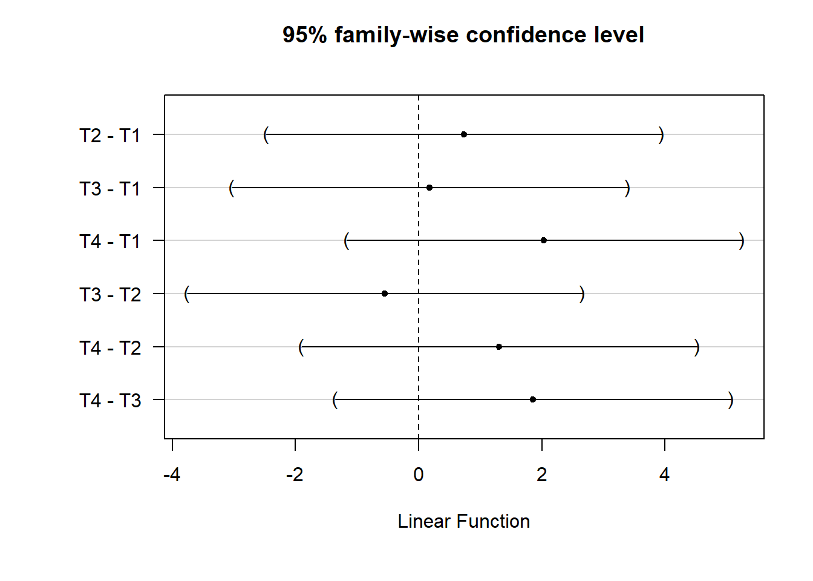
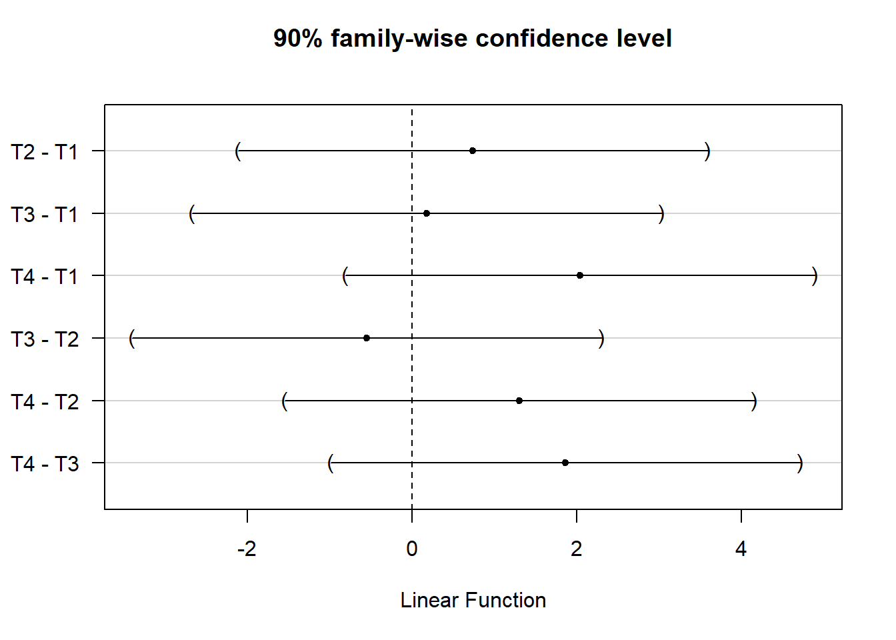

Chapter 5 Analysis Choices
We’ve organized our discussion of analysis tactics in this chapter by a study’s design. After all, different study designs often require different analyses. But there are a few general tactics that we use to ensure that we can make transparent, valid, and statistically precise statements about the results of our research. We’ll start this chapter by discussing those.
First, the nature of the data that we expect to see from a given experiment informs our analysis plans. For example, we may make some choices based on the nature of the outcome — a binary outcome, a symmetrically distributed continuous outcome, and a heavily skewed continuous outcome each could each call for different analytical approaches.
Second, we tend to ask three different questions in each of our studies, and we answer them with different statistical procedures:
- Can we detect an effect in our experiment? (We use hypothesis tests to answer this question.)
- What is our best guess about the size of the effect of the experiment? (We estimate the average treatment effect of our interventions to answer this question.)
- How precise is our guess? (We report confidence intervals or standard errors to answer this question.)
Finally, in the Analysis Plans that we post online before receiving outcome data for a project, we try to anticipate many common decisions involved in data analysis — how we will treat missing data, how we will rescale, recode, and combine columns of raw data, etc. We touch on some of these topics in more detail below, and will cover others in a future chapter on Working with Data.
5.1 Completely or Urn-Draw Randomized Trials
5.1.1 Two arms
5.1.1.1 Continuous outcomes
In a completely randomized trial where outcomes take on many levels (units like times, counts of events, dollars, percentages, etc.) we generally assess the weak null hypothesis of no average effects, estimate an average treatment effect, and may also assess the sharp null hypothesis of no effect for any unit using some test statistic beside a difference-in-means.14 This last assessment allows us to check on whether our choice to focus on mean differences matters for our substantive interpretation of the results.
5.1.1.1.1 Estimating the average treatment effect and testing the weak null of no average effects
We show the kind of code we use for these purposes here. Below, Y is the outcome variable and Z is an indicator of the assignment to treatment.
## This function comes from the estimatr package
estAndSE1 <- difference_in_means(Y ~ Z,data = dat1)
print(estAndSE1)** Similarly to the R code, estimate the difference
** in means assuming unequal variance across treatment groups.
** There isn't a perfect Stata equivalent providing a
** design-based difference in means estimator.
ttest y, by(z) unequalDesign: Standard
Estimate Std. Error t value Pr(>|t|) CI Lower CI Upper DF
Z 4.637 1.039 4.465 8.792e-05 2.524 6.75 33.12Notice that the standard errors that we use are not the default OLS errors:
estAndSE1OLS <- lm(Y~Z,data=dat1)
summary(estAndSE1OLS)$coefreg y z Estimate Std. Error t value Pr(>|t|)
(Intercept) 2.132 0.4465 4.775 6.283e-06
Z 4.637 0.8930 5.193 1.123e-06The standard errors we prefer reflect repeated randomization from a fixed experimental pool. This is known as the HC2 standard error. Lin (2013) and Samii and Aronow (2012) show that the standard error estimator of an unbiased average treatment effect within a “finite-sample” or design-based framework (i.e., the Neyman standard error; see Chapter 3) is equivalent to the HC2 standard error. These SEs are produced by default by the estimatr package’s function difference_in_means() and the lmtest package’s functions coeftest() and coefci(). They can also be produced using the vcovHC() function from the sandwich package.
Our preference for HC2 errors follows from their design-based justification, but many researchers encounter them as one of several methods of correcting OLS standard errors for heteroscedasticity. Essentially, this means that the variance of the regression model’s error term is not constant across observations.15 When using OLS to analyze data from a two-arm randomized trial, heteroscedasticity might appear because the variance of the outcome is different in the treatment and control groups. This is common in practice.
5.1.1.1.2 Testing the sharp null of no effects
We may assess the sharp null of no effects via direct permutation as a check on the assumptions underlying the calculations and statistical inferences above (i.e., “randomization inference”). We tend to use a -statistic as our test statistic here to parallel the above tests. But we could use a rank-based test statistic instead if we were concerned about long-tails (i.e., skew) reducing statistical power.
Below, we show how to perform these tests using two different R packages (coin and ri2), along with several Stata commands (permute and ritest). First, the coin package (Hothorn et al. 2021) in R and permute in Stata:
## The coin package
set.seed(12345)
# Compare means
test1coinT <- oneway_test(Y~factor(Z),data=dat1,distribution=approximate(nresample=1000))
test1coinT
# Rank test 1
test1coinR<- oneway_test(rankY~factor(Z),data=dat1,distribution=approximate(nresample=1000))
test1coinR
# Rank test 2
test1coinWR <- wilcox_test(Y~factor(Z),data=dat1,distribution=approximate(nresample=1000))
test1coinWR** The permute command
set seed 12345
* Compare means
permute z z = _b[z], reps(1000) nodots: reg y z // OR: permtest2 y, by(z) simulate runs(1000)
* Rank test 1
egen ranky = rank(y)
permute z z = _b[z], reps(1000) nodots: reg ranky z
* Rank test 2
permute z z = r(z), reps(1000) nodots: ranksum y, by(z)
* OR: ranksum y, by(z) exact // exact, not approximate
Approximative Two-Sample Fisher-Pitman Permutation Test
data: Y by factor(Z) (0, 1)
Z = -4.6, p-value <0.001
alternative hypothesis: true mu is not equal to 0
Approximative Two-Sample Fisher-Pitman Permutation Test
data: rankY by factor(Z) (0, 1)
Z = -4.9, p-value <0.001
alternative hypothesis: true mu is not equal to 0
Approximative Wilcoxon-Mann-Whitney Test
data: Y by factor(Z) (0, 1)
Z = -4.9, p-value <0.001
alternative hypothesis: true mu is not equal to 0Next, the ri2 R package (Coppock 2022b) and ritest in Stata:
## The ri2 package
thedesign1 <- randomizr:::declare_ra(N=ndat1,m=sum(dat1$Z))
test1riT <- conduct_ri(Y~Z,declaration=thedesign1,sharp_hypothesis=0,data=dat1,sims=1000)
tidy(test1riT)
test1riR <- conduct_ri(rankY~Z,declaration=thedesign1,sharp_hypothesis=0,data=dat1,sims=1000)
tidy(test1riR)** The ritest command
* ssc install ritest
ritest z z = _b[z], nodots reps(1000): reg y z
ritest z z = r(z), nodots reps(1000): ranksum y, by(z) Random assignment procedure: Complete random assignment
Number of units: 100
Number of treatment arms: 2
The possible treatment categories are 0 and 1.
The number of possible random assignments is approximately infinite.
The probabilities of assignment are constant across units:
prob_0 prob_1
0.75 0.25
term estimate p.value
1 Z 4.637 0
term estimate p.value
1 Z 30.8 0It is also relatively common for OES evaluations to encounter situations where these canned approaches may not be appropriate (e.g., the study design employs an uncommon randomization scheme). In such cases, it is useful to be able to program randomization inference manually. We provide simple templates for how this could be done in the code below, focusing on complete random assignment. This yields similar results to the canned functions above.
[1] 0** Define a program to re-randomize a single time
** and return a desired test statistic.
capture program drop ri_draw
program define ri_draw, rclass
** Using randomizr (Stata version)
capture drop riZ
qui sum z
local zsum = r(sum)
complete_ra riZ, m(`zsum')
** Or manually
/*
gen rand = runiform()
sort rand
qui sum z
gen riZ = 1 in 1/r(sum)
replace riZ = 0 if missing(riZ)
drop rand
*/
** Return the test statistic of interest.
** Simplest is the difference in means itself.
qui reg y riZ
return scalar riZ = _b[riZ]
end
** We'll use simulate to repeat this many times.
** Nested within preserve/restore to return to our data after.
preserve
** Get the real test statistic
qui reg y z
local real_stat = _b[z]
** Perform the simulation itself
simulate ///
riZ = r(riZ), ///
reps(1000): ///
ri_draw
** Calculate the p-value.
* How often do different possible treatment assignments,
* under a sharp null, yield test statistics with a magnitude
* at least as large as our real statistic?
gen equal_or_greater = abs(riZ) >= abs(`real_stat')
qui sum equal_or_greater
local ri_p_manual = r(mean)
** Compare to output from permute or ritest above
di `ri_p_manual'
restore[1] 05.1.1.2 Binary outcomes
We tend to focus on differences in percentage points when we are working with binary outcomes, usually estimated via OLS linear regression. A statement like “the effect was a 5 percentage point increase” has made communication with partners easier than a discussion in terms of log odds or odds ratios. In addition to difficulties in interpretation and communication, we also avoid logistic regression coefficients because of the bias problem noticed by Freedman (2008b) in the case of covariance adjustment or more complicated research designs.
5.1.1.2.1 Estimating the average treatment effect and testing the weak null of no average effects
We can estimate effects (and produce standard errors) for differences of proportions using the same process as above. The average treatment effect estimate here represents the difference in the proportions of positive responses (i.e., ) between treatment conditions. The standard error is still valid because it is based on the design of the study and not the distribution of the outcomes.
## Make some binary outcomes
dat1$u <- runif(ndat1)
dat1$v <- runif(ndat1)
dat1$y0bin <- ifelse(dat1$u>.5, 1, 0) # control potential outcome
dat1$y1bin <- ifelse((dat1$u+dat1$v) >.75, 1, 0) # treated potential outcomes
dat1$Ybin <- with(dat1, Z*y1bin + (1-Z)*y0bin)
truePropDiff <- mean(dat1$y1bin) - mean(dat1$y0bin)
## Estimate and view the difference in proportions
estAndSE2 <- difference_in_means(Ybin~Z,data=dat1)
estAndSE2** Make some binary outcomes
gen u = runiform()
gen v = runiform()
gen uv = u + v
gen y0bin = cond(u > 0.5, 1, 0) // control potential outcome
gen y1bin = cond(uv > 0.75, 1, 0) // treated potential outcome
gen ybin = (z * y1bin) + ((1 - z) * y0bin)
qui sum y1bin, meanonly
local y1mean = r(mean)
qui sum y0bin, meanonly
global truePropDiff = `y1mean' - r(mean)
** Estimate and view the difference in proportions
ttest ybin, by(z) unequalDesign: Standard
Estimate Std. Error t value Pr(>|t|) CI Lower CI Upper DF
Z 0.08 0.1156 0.6918 0.4929 -0.1535 0.3135 41.39When we have an experiment that includes a treatment and control group with binary outcomes, and when we are estimating the ATE, the standard error from a difference in proportions test is the same as the Neyman standard error (and therefore the HC2 error). In contrast, the standard error from a regular OLS regression with a binary outcome — sometimes called a linear probability model — will be at least slightly incorrect due to inherent heteroscecdasticity (Angrist and Pischke 2009).
To see some logic for this, first consider that difference-in-proportion standard errors are estimated with the following equation:
is the size of the group assigned treatment, is the size of the group assigned control, is the proportion of “successes” in the group assigned treatment, and iss the proportion of “successes” in the group assigned control. Notice that the numerator in the fractions above represents the variance of the proportion in each treatment group.
Compare this with the Neyman standard error equation (Lin 2013):16
is the vector of observed outcomes under control, and is the vector of observed outcomes under treatment. This equation indicates that we use the observed variances in each treatment group to estimate the Neyman standard error for a difference in means.
The code below compares the various standard error estimators discussed here.
nt <- sum(dat1$Z)
nc <- sum(1-dat1$Z)
## Find SE for difference of proportions.
p1 <- mean(dat1$Ybin[dat1$Z==1])
p0 <- mean(dat1$Ybin[dat1$Z==0])
se1 <- (p1*(1-p1))/nt
se0 <- (p0*(1-p0))/nc
se_prop <- round(sqrt(se1 + se0), 4)
## Find Neyman SE
varc_s <- var(dat1$Ybin[dat1$Z == 0])
vart_s <- var(dat1$Ybin[dat1$Z == 1])
se_neyman <- round(sqrt((vart_s/nt) + (varc_s/nc)), 4)
## Find OLS SE
simpOLS <- lm(Ybin~Z,dat1)
se_ols <- round(coef(summary(simpOLS))["Z", "Std. Error"], 2)
## Find Neyman SE (which are the HC2 SEs)
se_neyman2 <- coeftest(simpOLS,vcov = vcovHC(simpOLS,type="HC2"))[2,2]
se_neyman3 <- estAndSE2$std.error
## Show SEs
se_compare <- as.data.frame(cbind(se_prop, se_neyman, se_neyman2, se_neyman3, se_ols))
rownames(se_compare) <- "SE(ATE)"
colnames(se_compare) <- c("diff in prop", "neyman1","neyman2","neyman3", "ols")
print(se_compare)qui sum z
global nt = r(sum)
tempvar oneminus
gen `oneminus' = 1 - z
qui sum `oneminus'
global nc = r(sum)
** Find SE for difference of proportions.
qui ttest ybin, by(z)
local p1 = r(mu_2)
local p0 = r(mu_2)
local se1 = (`p1' * (1 - `p1'))/$nt
local se0 = (`p0' * (1 - `p0'))/$nc
global se_prop = round(sqrt(`se1' + `se0'), 0.0001)
local se_list $se_prop // Initialize a running list; used in the matrix below
** Find Neyman SE
qui sum ybin if z == 0
local varc_s = r(sd) * r(sd)
qui sum ybin if z == 1
local vart_s = r(sd) * r(sd)
global se_neyman = round(sqrt((`vart_s'/$nt) + (`varc_s'/$nc)), 0.0001)
local se_list `se_list' $se_neyman
** Find OLS SE
qui reg ybin z
global se_ols = round(_se[z], 0.0001) // See also: r(table) (return list) or e(V) (ereturn list)
local se_list `se_list' $se_ols
** Find Neyman SE (which are the HC2 SEs)
qui reg ybin z, vce(hc2)
global se_neyman2 = round(_se[z], 0.0001)
qui ttest ybin, by(z) unequal // See: return list
global se_neyman3 = round(r(se), 0.0001)
local se_list `se_list' $se_neyman2 $se_neyman3
** Show SEs
matrix se_compare = J(1, 5, .)
matrix colnames se_compare = "diff in prop" "neyman1" "ols" "neyman2" "neyman3"
local i = 0
foreach l of local se_list {
local ++i
matrix se_compare[1, `i'] = `l'
}
matrix list se_compare diff in prop neyman1 neyman2 neyman3 ols
SE(ATE) 0.1137 0.1156 0.1156 0.1156 0.125.1.1.2.2 Testing the sharp null of no effects
With a binary treatment and a binary outcome, we could test hypothesis that outcomes are totally independent of treatment assignment using what is called Fisher’s exact test. We can also use the permutation-based approaches above to produce results that do not rely on asymptotic assumptions. Below we show how Fisher’s exact test, the Exact Cochran-Mantel-Haenszel test, and the Exact -squared test produce the same answers.
test2fisher <- fisher.test(x=dat1$Z,y=dat1$Ybin)
print(test2fisher)
test2chisq <- chisq_test(factor(Ybin)~factor(Z),data=dat1,distribution=exact())
print(test2chisq)
test2cmh <- cmh_test(factor(Ybin)~factor(Z),data=dat1,distribution=exact())
print(test2cmh)tabulate z ybin, exact
tabulate z ybin, chi2
* search emh
emh z ybin
Fisher's Exact Test for Count Data
data: dat1$Z and dat1$Ybin
p-value = 0.6
alternative hypothesis: true odds ratio is not equal to 1
95 percent confidence interval:
0.5045 3.9124
sample estimates:
odds ratio
1.38
Exact Pearson Chi-Squared Test
data: factor(Ybin) by factor(Z) (0, 1)
chi-squared = 0.48, p-value = 0.6
Exact Generalized Cochran-Mantel-Haenszel Test
data: factor(Ybin) by factor(Z) (0, 1)
chi-squared = 0.48, p-value = 0.6A difference-in-proportions test can also be performed directly (rather than relying on OLS to approximate this). In that case, the null hypothesis is tested while using a binomial distribution (rather than a Normal distribution) to approximate the underlying randomization distribution. In reasonably-sized samples, both approximations perform well.
mat <- with(dat1,table(Z,Ybin))
matpt <- prop.test(mat[,2:1])
matptprtest ybin, by(z)
2-sample test for equality of proportions with continuity correction
data: mat[, 2:1]
X-squared = 0.21, df = 1, p-value = 0.6
alternative hypothesis: two.sided
95 percent confidence interval:
-0.3295 0.1695
sample estimates:
prop 1 prop 2
0.52 0.60 5.1.2 Multiple arms
Multiple treatment arms can be analyzed as above, except that we now have
more than one comparison between a treated group and a control group. Such studies raise both substantive and statistical questions about multiple
testing (or “multiple comparisons”). For example, the difference_in_means
function asks which average treatment effect it should estimate, and it
only presents one comparison at a time. We could compare the treatment T2
with the baseline outcome of T1. But we could also compare both of T2 and T3 with T1 at the same time, as in the second set of results (lm_robust implements the same standard errors as difference_in_means, but allows for more flexible model specification).
## Comparing only conditions 1 and 2
estAndSE3 <- difference_in_means(Y~Z4arms,data=dat1,condition1="T1",condition2="T2")
print(estAndSE3)
## Compare each other arm to T1
estAndSE3multarms <- lm_robust(Y~Z4arms,data=dat1)
print(estAndSE3multarms)** Comparing only conditions 1 and 2
ttest y if inlist(z4arms, "T1", "T2"), by(z4arms) unequal
** Compare each other arm to T1
encode z4arms, gen(z4num)
reg y ib1.z4num, vce(hc2) // Set 1 as the reference categoryDesign: Standard
Estimate Std. Error t value Pr(>|t|) CI Lower CI Upper DF
Z4armsT2 0.7329 1.298 0.5647 0.5749 -1.877 3.343 47.67
Estimate Std. Error t value Pr(>|t|) CI Lower CI Upper DF
(Intercept) 2.5541 0.8786 2.9070 0.004532 0.8101 4.298 96
Z4armsT2 0.7329 1.2979 0.5647 0.573593 -1.8433 3.309 96
Z4armsT3 0.1798 1.1582 0.1552 0.876956 -2.1192 2.479 96
Z4armsT4 2.0372 1.2353 1.6491 0.102393 -0.4149 4.489 96In this case, we could make different possible comparisons between pairs of treatment groups. Consider that if there were really no effects of any treatment, and if we chose to reject the null at the standard significance threshold of , we would actually claim that there was at least one effect more than 5% of the time. , or 27% of the time, we would make a false positive error, claiming an effect existed when it did not.
In general, our analyses of studies with multiple arms should reflect the fact that we are making multiple comparisons. Two points are worth emphasizing here. First, the family-wise error rate (FWER) of these tests will differ from the individual error rate of single test. In short, testing more than one hypothesis increases the chance of making at least one Type I error (i.e., incorrectly rejecting a true null hypothesis). Suppose instead of testing a single hypothesis at a conventional significance level of we tested two hypothesis at . The probability of retaining both hypotheses is and the probability of rejecting at least one of these hypotheses is — almost double our stated significance threshold of .
Second, multiple tests will often be correlated, and corrections for multiple testing should recognize these relationships — importantly, accounting for this correlation will penalize multiple testing less! When we say that tests are “correlated,” we mean that there is some relationship between the test statistics (e.g., a student’s t-statistic, or a statistic) used to perform statistical inference in each case. In other words, it means that the test statistics are jointly distributed — when one test statistic is higher, the other will tend to be higher as well.17
That issue in mind, our default recommendations for multi-arm trials are as follows:
First, decide on a focal, confirmatory comparison for the entire evaluation: say, control/status quo versus receiving any version of the treatment. Such a test would likely have more statistical power than a test that evaluates each arm separately, and would also have a correctly controlled false positive rate. This would then serve as the primary confirmatory finding we report.
Next, we perform the rest of the comparisons as exploratory analyses without multiple testing adjustment — i.e., as analyses that may inform future projects and give hints about where we might be seeing more or less of an effect, but which cannot serve as a foundation for overall conclusions on their own.
Alternatively, we might perform confirmatory comparisons that adjust for the collective false positive rate.18 Other options we consider are using the Tukey HSD procedure for pairwise comparisons, or testing the hypotheses in a particular order to preserve statistical power (Rosenbaum 2008).
5.1.2.1 Adjusting p-values and confidence intervals for multiple comparisons
Here is an illustration of different methods of adjusting for multiple comparisons in R.
To reflect that fact that we are making multiple comparisons, we could adjust -values from (uncorrelated) tests to control the familywise error rate at through either a single step procedure (e.g. Bonferroni correction) or a stepwise stepwise procedure (such as the Holm correction). We might also control the false discovery rate (e.g., using the Benjamini-Hochberg correction).
Our standard practice is to adjust the FWER for uncorrelated tests using Holm adjustment. For more on such adjustments and multiple comparisons see EGAP’s 10 Things you need to know about multiple comparisons.
## Get p-values but exclude intercept
pvals <- summary(estAndSE3multarms)$coef[2:4,4]
## Illustrate different corrections (or lack thereof)
# None
round(p.adjust(pvals, "none"), 3)
# Bonferroni
round(p.adjust(pvals, "bonferroni"), 3)
# Holm
round(p.adjust(pvals, "holm"), 3)
# Hochberg
round(p.adjust(pvals, "hochberg"), 3) # FDR instead of FWER** Get p-values but exclude intercept
* See also: search parmest
matrix pvals = r(table)["pvalue", 2..4] // save in a matrix
matrix pvalst = pvals' // transpose
svmat pvalst, names(col) // add matrix as data in memory
** Illustrate different corrections (or lack thereof)
* None
replace pvalue = round(pvalue, 0.0001)
list pvalue if !missing(pvalue)
* Bonferroni
* ssc install qqvalue
qqvalue pvalue if !missing(pvalue), method(bonferroni) qvalue(adj_p_bonf)
replace adj_p_bonf = round(adj_p_bonf, 0.0001)
list adj_p_bonf if !missing(pvalue)
* Holm
qqvalue pvalue if !missing(pvalue), method(holm) qvalue(adj_p_holm)
replace adj_p_holm = round(adj_p_holm, 0.0001)
list adj_p_holm if !missing(pvalue)
* Hochberg
qqvalue pvalue if !missing(pvalue), method(hochberg) qvalue(adj_p_hoch)
replace adj_p_hoch = round(adj_p_hoch, 0.0001)
list adj_p_hoch if !missing(pvalue) // FDR instead of FWER[1] "None"
Z4armsT2 Z4armsT3 Z4armsT4
0.574 0.877 0.102
[1] "Bonferroni"
Z4armsT2 Z4armsT3 Z4armsT4
1.000 1.000 0.307
[1] "Holm"
Z4armsT2 Z4armsT3 Z4armsT4
1.000 1.000 0.307
[1] "Hochberg"
Z4armsT2 Z4armsT3 Z4armsT4
0.877 0.877 0.307 Simply adjusting -values from this linear model, however, ignores the fact that we may be interested in other pairwise comparisons, such as the difference in effects between receiving T3 vs T4. It also ignores potential correlations in the distribution of test statistics (i.e., we are leaving statistical power “on the table”).
Instead of the above, and instead of employing simulation to control the FWER (step 7 on this page), we can also implement a Tukey Honestly Signficant Differences (HSD) test. The Tukey HSD test (sometimes called a Tukey range test or just a Tukey test) calculates multiple-comparison-adjusted -values and simultaneous confidence intervals for all pairwise comparisons in a model, while taking into account possible correlations between test statistics. It is similar to a two-sample t-test, but with built in adjustment for multiple comparisons. The test statistic for any comparison between two equally-sized groups and is:
and are the means in groups and , respectively. is the pooled standard deviation of the outcome, and is the common sample size. A critical value is then chosen for given the desired significance level, , the number of groups being compared, , and the degrees of freedom, . We’ll represent this critical value with .
The confidence interval for any difference between equally-sized groups is then:19
We present an R implementation of the Tukey HSD test using the glht() function from the multcomp package, which offers more flexiblity than the
TukeyHSD in the base stats package (at the price of a slightly more complicated syntax). We also illustrate a few options in Stata. But to perform this post-hoc test, we first need to fit an applicable model.
## We can use aov() or lm()
dat1$Z4factor <- as.factor(dat1$Z4arms)
aovmod <- aov(Y~Z4factor, dat1)
##lmmod <- lm(Y~Z4arms, dat1)anova y z4numIn R, using the glht() function’s linfcnt argument, we tell the function to conduct a Tukey test of all pairwise comparisons for our treatment indicator, . In Stata, we can do this using the tukeyhsd command or pwcompare commands.
tukey_mc <- glht(aovmod, linfct = mcp(Z4factor = "Tukey"))
summary(tukey_mc)* search tukeyhsd
* search qsturng
tukeyhsd z4num
* Or: pwcompare z4arms, mcompare(tukey) effects
Simultaneous Tests for General Linear Hypotheses
Multiple Comparisons of Means: Tukey Contrasts
Fit: aov(formula = Y ~ Z4factor, data = dat1)
Linear Hypotheses:
Estimate Std. Error t value Pr(>|t|)
T2 - T1 == 0 0.733 1.226 0.60 0.93
T3 - T1 == 0 0.180 1.226 0.15 1.00
T4 - T1 == 0 2.037 1.226 1.66 0.35
T3 - T2 == 0 -0.553 1.226 -0.45 0.97
T4 - T2 == 0 1.304 1.226 1.06 0.71
T4 - T3 == 0 1.857 1.226 1.51 0.43
(Adjusted p values reported -- single-step method)Focusing on the R results, we can then plot the 95% family wise confidence intervals for these comparisons.
## Save dfault ploting parameters
op <- par()
## Add space to left-hand outer margin
par(oma = c(1, 3, 0, 0))
plot(tukey_mc)
We can also obtain simultaneous confidence intervals at other levels of statistical significance using the confint() function.
## Generate and plot 90% confidence intervals
tukey_mc_90ci <- confint(tukey_mc, level = .90)
plot(tukey_mc_90ci)
See also, in R: pairwise.prop.test for binary outcomes.
5.1.3 Multiple Outcomes
Our studies often involve more than one outcome measure. Assessing the effect of even a simple two-arm treatment on 10 different outcomes raises the same kinds of questions that come up in the context of multi-arm trials, generally requiring applications of the methods discussed above.
5.2 Covariance adjustment (the use of background information to increase precision)
When we have background or baseline information about experimental units, we can use this to increase the precision with which we estimate our treatment effects (i.e., increase the statistical power of our tests). We prefer to use this information during the design phase to create block randomized designs. But we may only have access to such background information after the study has been fielded, and so we will pre-specify use of this information to increase our statistical power.
We sometimes avoid the practice of adjusting for covariates (or fixed effect dummies) in a linear and additive fashion. This estimator of the average treatment effect can be subject to small-sample bias and may be — counterintuitively — less efficient (Freedman 2008a).20 In contrast, an approach to covariate adjustment that we call the “Lin estimator” performs better (Lin 2013). To be clear, the bias/precision-loss attributable to linear covariance adjustment estimator may often be quite small, especially when sample sizes are large. Yet, because it is frequently costless to use the Lin estimator in sufficiently large samples, this is our default recommendation (see this page as well). That said, a number of our projects encounter situations where linear, additive covariate adjustment is preferred.21
5.2.1 Possible bias in the least squares ATE estimator with covariates
When we estimate the average treatment effect using least squares we tend to say that we “regress” some outcome for each unit , , on (often binary) treatment assignment, , where if a unit is assigned to treatment and 0 if assigned to control. And we write a linear model relating and as below, where represents the difference in means of between units with and :
This is a common practice because we know that the formula to estimate in Equation (1) is the same as the difference-in-means when comparing across the treatment and control groups:
This last term, expressed with covariances and variances, is the expression for the slope coefficient in a bivariate OLS regression model. This estimator of the average treatment effect has no systematic error (i.e., it is unbiased), so we can write , where refers to the expectation of across randomizations consistent with the experimental design.
Sometimes we have an additional (pre-treatment) covariate, , commonly included in the analysis as follows:
What is in this case? The matrix representation here is: . But it will be more useful to examine the scalar formula:
In very large experiments because is randomly assigned and is thus independent of background variables like . However in any given finite sized experiment , so this does not reduce to an unbiased estimator as it does in the bivariate case. Thus, Freedman (2008a) showed that there is a small amount of bias in using the equation above to estimate the average treatment effect.
To address this small-sample bias, and to address the asymptotic inefficiency issue with linear covariance adjustment noted by Freedman (2008a), Lin (2013) suggests the following least squares approach — regressing the outcome on binary treatment assignment and its interaction with mean-centered covariates:22
When implementing this covariance adjustment strategy, remember that every covariate, including binary indicators used to estimate fixed effects or to control for categorical covariates, should be mean-centered and interacted with treatment.
For instance, imagine a design with two treatment arms (treatment vs control) and three covariates. Linear adjustment for these covariates would involve fitting an OLS regression with four slope coefficients (one for the treatment group, and one for each covariate). Lin (2013) adjustment for these covariates would instead involve fitting a regression with seven slope coefficients (one for the treatment group, one for each mean-centered covariate, and one for each interaction of treatment with a mean-centered covariate).23
See the Green-Lin-Coppock SOP for more examples of this approach to covariance adjustment.
5.2.2 Illustrating the Lin Approach to Covariance Adjustment
Here, we show how covariance adjustment can create bias in estimation of the average treatment effect — and how to reduce this bias while using the Lin procedure as well as by increasing the size of the experiment. In this case, we compare an experiment with 20 units to an experiement with 100 units, in each case with half of the units assigned to treatment by complete random assignment.
We’ll use the DeclareDesign package in the R code to make this process of writing a simulation to assess bias easier.24 Much of the R code that follows is providing instructions to the diagnose_design command, which repeats the design of the experiment many times, each time estimating an average treatment effect, and comparing the mean of those estimate to the truth (labeled “Mean Estimand” below). We also provide code illustrating how you could accomplish something similar in Stata using manually defined programs and the simulate command.
The true potential outcomes in these example data (y1 and y0) were generated using one covariate, called cov2, with no treatment effect. In what follows, we compare the performance of (1) the simple estimator using OLS to (2) estimators that use Lin’s procedure involving just the correct covariate, and also to (3) estimators that use incorrect covariates (since we rarely know exactly the covariates that help generate any given behavioral outcome).
We’ll break this code up into sections to help with legibility. First, in R, we prepare design objects (a class used by DeclareDesign) for the and designs. Meanwhile, in Stata, we write a program to randomly generate a sample dataset; this program will then be iterated below. In both the R and Stata simulations, we follow a design-based philosophy in which randomness in our estimates across simulations comes only from variation in treatment assignment.
## Keep a dataframe of select variables
wrkdat1 <- dat1 %>% dplyr::select(id,y1,y0,contains("cov"))
## Declare this as our larger population
## (an experimental sample of 100 units)
popbigdat1 <- declare_population(wrkdat1)
## A dataset to represent a smaller experiment,
## or a cluster randomized experiment with few clusters
## (an experimental sample of 20 units)
set.seed(12345)
smalldat1 <- dat1 %>% dplyr::select(id,y1,y0,contains("cov")) %>% sample_n(20)
## Now declare the different inputs for DeclareDesign
## (declare the smaller population, and assign treatment in each)
popsmalldat1 <- declare_population(smalldat1)
assignsmalldat1 <- declare_assignment(Znew=complete_ra(N,prob=0.5))
assignbigdat1 <- declare_assignment(Znew=complete_ra(N,prob=0.5))
## No additional treatment effects
## (potential outcomes)
po_functionNull <- function(data){
data$Y_Znew_0 <- data$y0
data$Y_Znew_1 <- data$y1
data
}
## A few additional declare design settings
ysdat1 <- declare_potential_outcomes(handler = po_functionNull)
theestimanddat1 <- declare_inquiry(ATE = mean(Y_Znew_1 - Y_Znew_0))
theobsidentdat1 <- declare_reveal(Y, Znew)
## The smaller sample design
thedesignsmalldat1 <- popsmalldat1 + assignsmalldat1 + ysdat1 + theestimanddat1 + theobsidentdat1
## The larger sample design
thedesignbigdat1 <- popbigdat1 + assignbigdat1 + ysdat1 + theestimanddat1 + theobsidentdat1** Preserve the running dataset used so far.
save main.dta, replace
** Keep a dataframe of select variables.
keep id y1 y0 cov*
** A dataset to represent a smaller experiment,
** or a cluster randomized experiment with few clusters
** (an experimental sample of 20 units).
** Only done for illustration here. In practice, we'll use the data
** generated in the R code for the sake of comparison.
set seed 12345
gen rand = runiform()
sort rand
keep in 1/20
drop rand
** Define a program to load one of these datasets
** and then randomly re-assign treatment.
capture program drop sample_from
program define sample_from, rclass
syntax[ , smaller ///
propsimtreat(real 0.5) ]
* Which dataset to use?
if "`smaller'" != "" import delimited using "smalldat1.csv", clear
else import delimited using "popbigdat1.csv", clear
* Make sure propsimtreat is a proportion
if `propsimtreat' > 1 | `propsimtreat' < 0 {
di as error "Check input: propsimtreat"
exit
}
* Re-assign (simulated) treatment in this draw of the data
complete_ra znew, prob(`propsimtreat')
* No additional treatment effects
* (assigning new potential outcomes)
gen y_znew_0 = y0
gen y_znew_1 = y1
* Save the true ATE
gen true_effect = y_znew_1 - y_znew_0
qui sum true_effect, meanonly
return scalar ATE = r(mean)
* Get the revealed outcome
gen ynew = (znew * y_znew_1) + ((1 - znew) * y_znew_0)
endNext, in R, we’ll prepare a list of estimators (i.e., models) we want to compare. These include different numbers of (potentially incorrect) covariates, with and without Lin (2013) adjustment. Similarly, in Stata, we’ll write another program that generates a single dataset and then applies the same list of estimators to it, saving key results from each.
## Declare a selection of different estimation strategies
estCov0 <- declare_estimator(Y~Znew, inquiry=theestimanddat1, .method=lm_robust, label="CovAdj0: Lm, No Covariates")
estCov1 <- declare_estimator(Y~Znew+cov2, inquiry=theestimanddat1, .method=lm_robust, label="CovAdj1: Lm, Correct Covariate")
estCov2 <- declare_estimator(Y~Znew+cov1+cov2+cov3+cov4+cov5+cov6+cov7+cov8, inquiry=theestimanddat1, .method=lm_robust, label="CovAdj2: Lm, Mixed Covariates")
estCov3 <- declare_estimator(Y~Znew+cov1+cov3+cov4+cov5+cov6, inquiry=theestimanddat1, .method=lm_robust, label="CovAdj3: Lm, Wrong Covariates")
estCov4 <- declare_estimator(Y~Znew,covariates=~cov1+cov2+cov3+cov4+cov5+cov6+cov7+cov8, inquiry=theestimanddat1, .method=lm_lin, label="CovAdj4: Lin, Mixed Covariates")
estCov5 <- declare_estimator(Y~Znew,covariates=~cov2, inquiry=theestimanddat1, .method=lm_lin, label="CovAdj5: Lin, Correct Covariate")
## List them all together
all_estimators <- estCov0 + estCov1 + estCov2 + estCov3 + estCov4 + estCov5** Define a program to apply various estimation strategies
** to a dataset drawn using the program defined above.
capture program drop apply_estimators
program define apply_estimators, rclass
** Same arguments as above
syntax[, smaller ///
propsimtreat(real 0.5) ]
** Call the program above
sample_from, `smaller' propsimtreat(`propsimtreat')
return scalar ATE = r(ATE)
** CovAdj0: Lm, No Covariates
qui reg ynew znew, vce(hc2)
return scalar CovAdj0_est = _b[znew]
return scalar CovAdj0_p = r(table)["pvalue", "znew"]
** CovAdj1: Lm, Correct Covariate
qui reg ynew znew cov2, vce(hc2)
return scalar CovAdj1_est = _b[znew]
return scalar CovAdj1_p = r(table)["pvalue", "znew"]
** CovAdj2: Lm, Mixed Covariates
qui reg ynew znew cov1-cov8, vce(hc2)
return scalar CovAdj2_est = _b[znew]
return scalar CovAdj2_p = r(table)["pvalue", "znew"]
** CovAdj3: Lm, Wrong Covariates
qui reg ynew znew cov1 cov3-cov6, vce(hc2)
return scalar CovAdj3_est = _b[znew]
return scalar CovAdj3_p = r(table)["pvalue", "znew"]
** CovAdj4: Lin, Mixed Covariates
qui reg ynew znew cov1-cov8 // to make a sample indicator
gen samp = e(sample) // ensure correct obs are used in mean-centering
foreach var of varlist cov1-cov8 {
qui sum `var' if samp == 1, meanonly
qui gen mc_`var' = `var' - `r(mean)' if samp == 1
}
qui reg ynew i.znew##c.(mc_*), vce(hc2)
return scalar CovAdj4_est = _b[1.znew]
return scalar CovAdj4_p = r(table)["pvalue", "1.znew"]
drop mc_* samp
** CovAdj5: Lin, Correct Covariate
qui reg ynew znew cov2
gen samp = e(sample)
foreach var of varlist cov2 {
qui sum `var' if samp == 1, meanonly
qui gen mc_`var' = `var' - `r(mean)' if samp == 1
}
qui reg ynew i.znew##c.(mc_*), vce(hc2)
return scalar CovAdj5_est = _b[1.znew]
return scalar CovAdj5_p = r(table)["pvalue", "1.znew"]
drop mc_* samp
endAfter this, as a last step in R, we’ll add those estimators to our design class objects.
## Smaller sample
thedesignsmalldat1PlusEstimators <- thedesignsmalldat1 + all_estimators
## Larger sample
thedesignbigdat1PlusEstimators <- thedesignbigdat1 + all_estimatorsNow, let’s simulate each design 200 times and evaluate their performance. First, the smaller sample:
## Summarize characteristics of the smaller-sample designs
sims <- 200
set.seed(12345)
thediagnosisCovAdj1 <- diagnose_design(
thedesignsmalldat1PlusEstimators,
sims = sims,
bootstrap_sims = 0
)** Call the program once just to make a list of scalars to save
apply_estimators, smaller
local rscalars: r(scalars) // Save all scalars in r() to a local
local to_store "" // Update them in a loop to work properly in simulate
foreach item of local rscalars {
local to_store "`to_store' `item' = r(`item')"
}
** Summarize characteristics of the smaller-sample designs
set seed 12345
simulate ///
`to_store', ///
reps(200): ///
apply_estimators, smaller
** Create summary matrix
qui des, short // saves number of columns to r()
matrix diagnosands = J((r(k) - 1)/2, 6, .)
matrix rownames diagnosands = "Lm, No Covariates" "Lm, Correct Covariate" "Lm, Mixed Covariates" "Lm, Wrong Covariates" "Lin, Mixed Covariates" "Lin, Correct Covariate"
matrix colnames diagnosands = "Mean estimand" "Mean estimate" "Bias" "SD Estimate" "RMSE" "Power"
** Calculate quantities to include
** (https://declaredesign.org/r/declaredesign/reference/declare_diagnosands.html)
local row = 0
forvalues i = 0/5 {
local ++row
* Estimand
qui sum ATE, meanonly
matrix diagnosands[`row', 1] = r(mean)
* Estimate
qui sum CovAdj`i'_est, meanonly
matrix diagnosands[`row', 2] = r(mean)
* Bias
qui gen biascalc = CovAdj`i'_est - ATE
qui sum biascalc, meanonly
matrix diagnosands[`row', 3] = r(mean)
drop biascalc
* SD estimate (based on population variance, no n-1 in the variance denom.)
qui sum CovAdj`i'_est
qui gen sdcalc = (CovAdj`i'_est - r(mean))^2
qui sum sdcalc
matrix diagnosands[`row', 4] = sqrt(r(sum)/r(N))
drop sdcalc
* RMSE
gen atediff = (CovAdj`i'_est - ATE)^2
qui sum atediff, meanonly
matrix diagnosands[`row', 5] = sqrt(r(mean))
drop atediff
* Power
gen rejectnull = CovAdj`i'_p <= 0.05
qui sum rejectnull, meanonly
matrix diagnosands[`row', 6] = r(mean)
drop rejectnull
}
* View the results
matrix list diagnosandsSecond, the larger sample:
## Summarize characteristics of the larger-sample designs
set.seed(12345)
thediagnosisCovAdj2 <- diagnose_design(
thedesignbigdat1PlusEstimators,
sims = sims,
bootstrap_sims = 0
)** Summarize characteristics of the large-sample designs
apply_estimators
local rscalars : r(scalars)
local to_store ""
foreach item of local rscalars {
local to_store "`to_store' `item' = r(`item')"
}
simulate ///
`to_store', ///
reps(200): ///
apply_estimators
** Create summary matrix
qui des, short // get number of columns in r()
matrix diagnosands = J((r(k) - 1)/2, 6, .)
matrix rownames diagnosands = "Lm, No Covariates" "Lm, Correct Covariate" "Lm, Mixed Covariates" "Lm, Wrong Covariates" "Lin, Mixed Covariates" "Lin, Correct Covariate"
matrix colnames diagnosands = "Mean estimand" "Mean estimate" "Bias" "SD Estimate" "RMSE" "Power"
** Calculate quantities to include
local row = 0
forvalues i = 0/5 {
local ++row
* Estimand
qui sum ATE, meanonly
matrix diagnosands[`row', 1] = r(mean)
* Estimate
qui sum CovAdj`i'_est, meanonly
matrix diagnosands[`row', 2] = r(mean)
* Bias
qui gen biascalc = CovAdj`i'_est - ATE
qui sum biascalc, meanonly
matrix diagnosands[`row', 3] = r(mean)
drop biascalc
* SD estimate (based on population variance, no n-1 in the variance denom.)
qui sum CovAdj`i'_est
qui gen sdcalc = (CovAdj`i'_est - r(mean))^2
qui sum sdcalc
matrix diagnosands[`row', 4] = sqrt(r(sum)/r(N))
drop sdcalc
* RMSE
gen atediff = (CovAdj`i'_est - ATE)^2
qui sum atediff, meanonly
matrix diagnosands[`row', 5] = sqrt(r(mean))
drop atediff
* Power
gen rejectnull = CovAdj`i'_p <= 0.05
qui sum rejectnull, meanonly
matrix diagnosands[`row', 6] = r(mean)
drop rejectnull
}
* View the results
matrix list diagnosandsFrom the small sample simulation (N=20), we can see that “CovAdj1: Lm, Correct Covariate” shows fairly large bias compared to the estimator using no covariates at all. The Lin approach using only the correct covariate reduces the bias, but does not erase it. However, the unadjusted estimator has fairly low power where as the Lin approach with the correct covariate “CovAdj5: Lin, Correct Covariate” has excellent power to detect the 1 SD effect built into this experiment. One interesting result here is that the Lin approach is worst (in terms of power) when a mixture of correct and incorrect covariates are added to the linear model following the interaction-and-centering based approach.
| Estimator | Term | Mean Estimand | Mean Estimate | Bias | SD Estimate | RMSE | Power |
|---|---|---|---|---|---|---|---|
| CovAdj0: Lm, No Covariates | Znew | 5.03 | 4.93 | -0.10 | 1.89 | 1.89 | 0.64 |
| CovAdj1: Lm, Correct Covariate | Znew | 5.03 | 5.32 | 0.29 | 1.22 | 1.25 | 0.97 |
| CovAdj2: Lm, Mixed Covariates | Znew | 5.03 | 5.12 | 0.09 | 1.36 | 1.36 | 0.94 |
| CovAdj3: Lm, Wrong Covariates | Znew | 5.03 | 5.07 | 0.04 | 1.78 | 1.78 | 0.80 |
| CovAdj4: Lin, Mixed Covariates | Znew | 5.03 | 5.10 | 0.07 | 2.47 | 2.46 | 0.42 |
| CovAdj5: Lin, Correct Covariate | Znew | 5.03 | 5.17 | 0.14 | 1.13 | 1.13 | 0.97 |
The experiment with shows much smaller bias than the small experiment above. Since all estimators allow us to detect the 1 SD effect (Power=1), we can look to the RMSE (Root Mean Squared Error) column to learn about the precision of these estimators. Again, the unadjusted approach has low bias, but it now has the largest standard error. While the Lin approach with a mixture of correct and incorrect covariates has low bias, it shows slightly worse precision than one that gets the choice of covariates correct.
| Estimator | Term | Mean Estimand | Mean Estimate | Bias | SD Estimate | RMSE | Power |
|---|---|---|---|---|---|---|---|
| CovAdj0: Lm, No Covariates | Znew | 5.45 | 5.39 | -0.06 | 0.73 | 0.73 | 1.00 |
| CovAdj1: Lm, Correct Covariate | Znew | 5.45 | 5.44 | -0.02 | 0.46 | 0.46 | 1.00 |
| CovAdj2: Lm, Mixed Covariates | Znew | 5.45 | 5.46 | 0.01 | 0.47 | 0.46 | 1.00 |
| CovAdj3: Lm, Wrong Covariates | Znew | 5.45 | 5.43 | -0.02 | 0.60 | 0.60 | 1.00 |
| CovAdj4: Lin, Mixed Covariates | Znew | 5.45 | 5.45 | -0.01 | 0.47 | 0.47 | 1.00 |
| CovAdj5: Lin, Correct Covariate | Znew | 5.45 | 5.42 | -0.03 | 0.46 | 0.46 | 1.00 |
The Lin approach works well when covariates are few and sample sizes are large, but these simulations show where the approach is weaker: when there are many covariates (relative to the number of observations), some of which may not actually be correlated with the outcome. In this case, the estimator involving both correct and irrelevant covariates included 18 terms. Fitting a model with 18 terms using a small sample, e.g. , allows nearly any observation to exert undue influence, increases the risk of serious multicollinearity, and leads to overfitting problems in general.
Our team does not often run into such an extreme version of this problem because our studies have tended to involve many thousands of units and relatively few covariates. However, when we do encounter situations where the number of covariates (or fixed effects) we’d like to account for is large, we consider a few alternative approaches: (1) standard linear covariate adjustment; (2) collapsing the covariates into fewer dimensions (e.g., using principal component analysis); or (3) working with a residualized version of the outcome, as described below.
5.2.3 The Rosenbaum Approach to Covariance Adjustment
When we have many covariates, Lin adjustment may not be appropriate if the number of parameters to estimate becomes too large relative to a study’s sample size. Rosenbaum (2002) suggests an alternative approach in which the outcomes are regressed on covariates, ignoring treatment assignment, and then the residuals from that first regression are used as the outcome in a second regression to estimate an average treatment effect. Again, we evaluate this approach through simulation.
First, code we use to generate Rosenbaum (2002) estimators:
## The argument covs is a character vector of names of covariates.
## The function below generates a separate estimation command
## that performs Rosenbaum (2002) adjustment for the specified
## covariates, given a sample of data. This new function can
## then by used as an estimator in simulations below. This code
## takes advantage of the concept of "function factories."
## See, e.g.: https://adv-r.hadley.nz/function-factories.html.
make_est_fun<-function(covs){
force(covs)
## Generate a formula from the character vector of covariates
covfmla <- reformulate(covs,response="Y")
## What the new function to-be-generated will do,
## given the model generated above:
function(data){
data$e_y <- residuals(lm(covfmla,data=data))
obj <- lm_robust(e_y~Znew,data=data)
res <- tidy(obj) %>% filter(term=="Znew")
return(res)
}
}
## Make Rosenbaum (2002) estimators for different groups of covariates
est_fun_correct <- make_est_fun("cov2")
est_fun_mixed<- make_est_fun(c("cov1","cov2","cov3","cov4","cov5","cov6","cov7","cov8"))
est_fun_incorrect <- make_est_fun(c("cov1","cov3","cov4","cov5","cov6"))
## Declare additional estimators, to add to the designs above
estCov6 <- declare_estimator(handler = label_estimator(est_fun_correct), inquiry=theestimanddat1, label="CovAdj6: Resid, Correct")
estCov7 <- declare_estimator(handler = label_estimator(est_fun_mixed), inquiry=theestimanddat1, label="CovAdj7: Resid, Mixed")
estCov8 <- declare_estimator(handler = label_estimator(est_fun_incorrect), inquiry=theestimanddat1, label="CovAdj8: Resid, Incorrect")
## Add the additional estimators
thedesignsmalldat1PlusRoseEstimators <- thedesignsmalldat1 + all_estimators + estCov6 + estCov7 + estCov8
thedesignbigdat1PlusRoseEstimators <- thedesignbigdat1 + all_estimators + estCov6 + estCov7 + estCov8** Define a program to perform Rosenbaum estimation
* (with all variables specified in a varlist as in regress).
capture program drop rosenbaum_est
program define rosenbaum_est, rclass
* Assumed structure of varlist: outcome treatment list_of_covariates.
syntax varlist
* Alternative 1: syntax, outcome(varname) treatment(varname) covar(varlist)
* Alternative 2: syntax varlist, outcome(varname) treatment(varname)
* Pull out first var of varlist as outcome
tokenize `varlist'
local outcome `1'
macro shift
* Pull out second var of varlist as treatment
local treat_cov `*'
tokenize `treat_cov'
local treatment `1'
macro shift
* The rest are treated as covariates
local covar `*'
* Estimation
reg `outcome' `covar'
tempvar yhat
predict `yhat', xb
tempvar resid
gen `resid' = `outcome' - `yhat'
reg `resid' `treatment', vce(hc2)
* Output
return scalar out_est = _b[`treatment']
return scalar out_p = r(table)["pvalue", "`treatment'"]
end
** Program to apply this estimator to the generated data:
capture program drop apply_estimators_2
program define apply_estimators_2, rclass
syntax[, smaller ///
propsimtreat(real 0.5) ]
** Call the sample generation / random assignment program
sample_from, `smaller' propsimtreat(`propsimtreat')
return scalar ATE = r(ATE)
** CovAdj6: Resid, Correct
qui rosenbaum_est ynew znew cov2
return scalar CovAdj6_est = r(out_est)
return scalar CovAdj6_p = r(out_p)
** CovAdj7: Resid, Mixed
qui rosenbaum_est ynew znew cov1-cov8
return scalar CovAdj7_est = r(out_est)
return scalar CovAdj7_p = r(out_p)
** CovAdj8: Resid, Incorrect
qui rosenbaum_est ynew znew cov1 cov3-cov6
return scalar CovAdj8_est = r(out_est)
return scalar CovAdj8_p = r(out_p)
endSecond, we evaluate a design that applies those estimators to our smaller sample:
set.seed(12345)
thediagnosisCovAdj3 <- diagnose_design(
thedesignsmalldat1PlusRoseEstimators,
sims = sims,
bootstrap_sims = 0
)** Summarize characteristics of the smaller-sample designs
apply_estimators_2, smaller // Looking only at the rosenbaum estimators now
local rscalars : r(scalars)
local to_store ""
foreach item of local rscalars {
local to_store "`to_store' `item' = r(`item')"
}
simulate ///
`to_store', ///
reps(200): ///
apply_estimators_2, smaller
** Create summary matrix
qui des, short
matrix diagnosands = J((`r(k)' - 1)/2, 6, .)
matrix rownames diagnosands = "Resid, Correct" "Resid, Mixed" "Resid, Incorrect"
matrix colnames diagnosands = "Mean estimand" "Mean estimate" "Bias" "SD Estimate" "RMSE" "Power"
** Calculate quantities to include
local row = 0
forvalues i = 6/8 {
local ++row
* Estimand
qui sum ATE, meanonly
matrix diagnosands[`row', 1] = r(mean)
* Estimate
qui sum CovAdj`i'_est, meanonly
matrix diagnosands[`row', 2] = r(mean)
* Bias
qui gen biascalc = CovAdj`i'_est - ATE
qui sum biascalc, meanonly
matrix diagnosands[`row', 3] = r(mean)
drop biascalc
* SD estimate (based on population variance, no n-1 in the variance denom.)
qui sum CovAdj`i'_est
qui gen sdcalc = (CovAdj`i'_est - r(mean))^2
qui sum sdcalc
matrix diagnosands[`row', 4] = sqrt(r(sum)/r(N))
drop sdcalc
* RMSE
gen atediff = (CovAdj`i'_est - ATE)^2
qui sum atediff, meanonly
matrix diagnosands[`row', 5] = sqrt(r(mean))
drop atediff
* Power
gen rejectnull = CovAdj`i'_p <= 0.05
qui sum rejectnull, meanonly
matrix diagnosands[`row', 6] = r(mean)
drop rejectnull
}
* View the results
matrix list diagnosandsFinally, we evaluate a design that applies those estimators (alongside the others above) to our larger sample:
set.seed(12345)
thediagnosisCovAdj4 <- diagnose_design(
thedesignbigdat1PlusRoseEstimators,
sims = sims,
bootstrap_sims = 0
)** Summarize characteristics of the larger-sample designs
apply_estimators_2 // Looking only at the rosenbaum estimators now
local rscalars : r(scalars)
local to_store ""
foreach item of local rscalars {
local to_store "`to_store' `item' = r(`item')"
}
di "`to_store'"
simulate ///
`to_store', ///
reps(200): ///
apply_estimators_2
** Create summary matrix
qui des, short
matrix diagnosands = J((`r(k)' - 1)/2, 6, .)
matrix rownames diagnosands = "Resid, Correct" "Resid, Mixed" "Resid, Incorrect"
matrix colnames diagnosands = "Mean estimand" "Mean estimate" "Bias" "SD Estimate" "RMSE" "Power"
** Calculate quantities to include
local row = 0
forvalues i = 6/8 {
local ++row
* Estimand
qui sum ATE, meanonly
matrix diagnosands[`row', 1] = r(mean)
* Estimate
qui sum CovAdj`i'_est, meanonly
matrix diagnosands[`row', 2] = r(mean)
* Bias
qui gen biascalc = CovAdj`i'_est - ATE
qui sum biascalc, meanonly
matrix diagnosands[`row', 3] = r(mean)
drop biascalc
* SD estimate (based on population variance, no n-1 in the variance denom.)
qui sum CovAdj`i'_est
qui gen sdcalc = (CovAdj`i'_est - r(mean))^2
qui sum sdcalc
matrix diagnosands[`row', 4] = sqrt(r(sum)/r(N))
drop sdcalc
* RMSE
gen atediff = (CovAdj`i'_est - ATE)^2
qui sum atediff, meanonly
matrix diagnosands[`row', 5] = sqrt(r(mean))
drop atediff
* Power
gen rejectnull = CovAdj`i'_p <= 0.05
qui sum rejectnull, meanonly
matrix diagnosands[`row', 6] = r(mean)
drop rejectnull
}
* View the results
matrix list diagnosands
* Return to main data from before the covariance adjustment simulations
use main.dta, clear
erase main.dtaWith a small sample (N=20), the Rosenbaum-style approach yields very little bias and quite high power using the correct covariate (“CovAdj6: Resid, Correct”), but performs poorly in terms of bias and precision with incorrect covariates.
| Estimator | Term | Mean Estimand | Mean Estimate | Bias | SD Estimate | RMSE | Power | |
|---|---|---|---|---|---|---|---|---|
| 7 | CovAdj6: Resid, Correct | Znew | 5.03 | 5.04 | 0.01 | 1.15 | 1.14 | 0.99 |
| 8 | CovAdj7: Resid, Mixed | Znew | 5.03 | 3.01 | -2.01 | 1.06 | 2.28 | 0.84 |
| 9 | CovAdj8: Resid, Incorrect | Znew | 5.03 | 3.77 | -1.25 | 1.38 | 1.86 | 0.76 |
With a larger experiment, the bias goes down, but coverage is still relatively worse when incorrect covariates are included. We speculate that performance might improve if we fit covariance adjustment models that produce residuals separately for the treated and control groups.
| Estimator | Term | Mean Estimand | Mean Estimate | Bias | SD Estimate | RMSE | Power | |
|---|---|---|---|---|---|---|---|---|
| 7 | CovAdj6: Resid, Correct | Znew | 5.45 | 5.38 | -0.07 | 0.47 | 0.47 | 1.00 |
| 8 | CovAdj7: Resid, Mixed | Znew | 5.45 | 5.03 | -0.42 | 0.48 | 0.64 | 1.00 |
| 9 | CovAdj8: Resid, Incorrect | Znew | 5.45 | 5.16 | -0.30 | 0.60 | 0.67 | 1.00 |
5.3 How to choose covariates for covariance adjustment?
Our analysis plans commonly specify a few covariates based on what we know about the mechanisms and context of the study. In general, if we have a measurement of the outcome before the treatment was assigned — the baseline outcome — we try to use it as a part of a blocking or covariance adjustment strategy.
When we have access to many covariates, we may sometimes use simple machine learning methods to select variables that strongly predict the outcome, such as a lasso model. In particular, we tend to prefer the adaptive lasso rather than a simple lasso because it has better theoretical properties (Zou 2006), but also because the adaptive lasso tends to produce sparser results — and the bias from covariance adjustment can sometimes be significance if we include too many covariates.
5.4 Block-randomized trials
We design block-randomized trials by splitting units into groups based on predefined characteristics — covariates that cannot be changed by the experimental treatment — and then randomly assigning treatment within each group. We use this procedure when we want to increase our ability to detect signal from noise. It assumes that the noise, or random variation in the outcome measure, is associated with the variables that we use to assign blocks. For example, if we imagine that patterns of energy use will tend to differ according to size of family, we may create blocks or strata of different family sizes and randomly assign an energy saving intervention separately within those blocks.
We also design block-randomized experiments when we want to assess effects within and across subgroups (for example, if we want to ensure that we have enough statistical power to detect a difference in effects between veterans and non-veterans). If we have complete random assignment, it is likely that the proportion of veterans assigned treatment will not be exactly same as the proportion of non-veterans receiving treatment. However, if we stratify or block the group on military status, and randomly assign treatment and control within each group, we can then ensure that equal proportions (or numbers) or veterans and non-veterans receive the treatment and control.
Most of the general ideas that we demonstrated in the context of completely randomized trials have direct analogues in the case of block randomized trials. The only additional question that arises with block randomized trials is about how to weight the contributions of each individual block when calculating an overall average treatment effect or testing an overall hypothesis about treatment effects. We begin with the simple case of testing the sharp null of no effects when we have a binary outcome — in the case of a Cochran-Mantel-Haenszel test the weighting of different blocks is handled automatically.
5.4.1 Testing binary outcomes under block randomization: Cochran-Mantel-Haenszel (CMH) test for K X 2 X 2 tables
For block-randomized trials with a binary outcome, we might use the CMH test to evaluate the null of no effect.25 This is one way of keeping the outcomes for each strata separate rather than pooling them together — under blocking, we are effectively repeating the same experiment separately within each stratum. The CMH test tells us if the odds ratios across strata support an association between the outcome and treatment (Cochran 1954; Mantel and Haenszel 1959).
To set up the CMH test, we need k sets of 2x2 contingency tables. Suppose the table below represents outcomes from stratum i where A, B, C, and D are counts of observations:
| Assignment | Response | No response | Total |
|---|---|---|---|
| Treatment | A | B | A+B |
| Control | C | D | C+D |
| Total | A+C | B+D | A+B+C+D = T |
The CMH test statistic takes the sum of the deviations between observed and expected outcomes within each stratum ( and , respectively), squares this sum, and compares it to the sum of the variance within each strata:
where
and
In large-enough samples, if there are no associations between treatment and outcomes across strata, we would expect to see an odds ratio equal to 1. Across randomizations of large-enough samples, this test statistic follows an asymptotic distribution with degrees of freedom = 1.
For a standard two-arm trial, the odds ratio for a given stratum would be:
Across strata, could then find an overall common odds ratio as follows:
If this common odds ratio is substantially greater than 1, then we should suspect that there is an association between the outcome and treatment across strata, and the CMH test statistic would be large. If , this would instead support the null hypothesis that there is no association between treatment and the outcome, and the CMH test statistic would be small.
We could also use the CMH test to compare odds ratios between experiments, rather than comparing against the null that the common odds ratio = 1.
5.4.2 Estimating an overall average treatment effect
Whether or not we randomly assign a policy intervention within blocks or strata, our team nearly always reports a single estimate of the average treatment effect. To review, we define the overall ATE (the theoretical estimand) as a simple average of the individual treatment effects. For two treatments, we might write this individual-level causal effect as . We’d therefore express the overall (true) ATE across our sample as as . Unfortunately, this quantity is unobservable.
In blocked designs, we have randomly assigned the intervention within each block independently. As we note above, this (1) increases precision and (2) supports more credible subgroup analysis. How might we “analyze as we have randomized” to learn about using observable data? Our approach is to build up from the block-level. See Gerber and Green (2012) for more context.
Say, for example, that the unobserved ATE within a given block, , was . Here, we are averaging the individual level treatment effects () across all people in block . Now, imagine that we had an experiment with blocks of different sizes (and perhaps with different proportions of units assigned to treatment — e.g., certain blocks may be more expensive places in which to run an experiment). We can learn about by first reframing it as the block-size weighted average of the true within-block treatment effects:26
We can then estimate based on its observable analogue, just as we have with a completely randomized experiment. Blocks are essentially their own randomized experiments, so we can estimate each using the following unbiased estimator, where means “for in the treatment group” and where is the number of units assigned to treatment in block :
We would then plug the estimates into the expression for above, yielding . Note that many people do not use this unbiased estimator because its precision is worse that those of another, slightly biased estimator. We illustrate both methods below, the block-size weighted estimator and what we call the “precision-weighted” estimator. We also offer some reflections on when a biased estimator that tends to produce answers closer to the truth might be preferred over an unbiased estimator where any given estimate may be farther from the truth.
The precision-weighted estimator uses harmonic-weights. We have also tended to call it a “precision-weighted average.” The weights combine block size, , and the proportion of the block assigned to treatment, , for a binary treatment, . The weight within each block is , and the theoretical estimand is:
This approach may sound unfamiliar. But using precisions weights to average a set of within-block treatment effect estimates is equivalent to the more common practice of regression adjustment for linear, additive blocked fixed effects (and we show an example of this in our code below).
Two more points are worth emphasizing. First, by weighting blocks proportionally to their contributions to overall sample size, effectively treats all units equally in terms of their contributions to the ATE. In contrast, weights blocks (and therefore the individuals within them) relatively more if they have a treatment probability closer to 0.5.27 In effect, the precision benefits come from giving slightly more explanatory power to units in blocks with more balanced treatment assignment, at the expense of recovering as closely as possible.
Second, it should be clear from the expression for above that the precision-weighted approach will give no weight to units in blocks where the probability of treatment is 0 or 1 (i.e., all units are eiter treated or untreated, due perhaps to treatment administration issues). What may not be obvious yet is that the unbiased, block-size weighted approach suffers from the same problem. Treatment probabilities may not factor into , but these are block-level weights that we can’t apply without a within-block treatment effect estimate (which is not possible if there’s no within-block variation in treatment). Moreover, the unit level expression for these unbiased weights is a function of the within-block treated proportion :
For reference, an expression for unit-level precision-weights is:
Now, we’ll show multiple approaches to applying these estimators. We’ll also demonstrate (1) that ignoring the blocks when estimating treatment effects can produce problems in both estimation and testing, and (2) that the block-size weighted approaches are unbiased but possibly less precise than the precision weighted approaches.
## Create block sizes and create block weights
B <- 10 # Number of blocks
dat <- data.frame(b=rep(1:B,c(8,20,30,40,50,60,70,80,100,800)))
dat$bF <- factor(dat$b)
## x1 is a covariate that strongly predicts the outcome without treatment
set.seed(2201)
dat <- group_by(dat,b) %>%
mutate(
nb=n(),
x1=rpois(n = nb,lambda=runif(1,min=1,max=2000))
)
## The treatment effect varies by block size (sqrt(nb) because nb has such a large range.)
dat <- group_by(dat,b) %>%
mutate(
y0=sd(x1)*x1+rchisq(n=nb,df=1),
y0=y0*(y0>quantile(y0,.05)),
tauib = -(sd(y0))*sqrt(nb) + rnorm(n(),mean=0,sd=sd(y0)),
y1=y0+tauib,
y1=y1*(y1>0)
)
blockpredpower <- summary(lm(y0~bF,data=dat))$r.squared** Data simulation provided for illustration.
** In practice, will use data generated by the R code,
** for the sake of comparison.
** Create block sizes and create block weights
clear
local sizes 8 20 30 40 50 60 70 80 100 800 // Block sample sizes
set obs 10 // Number of blocks
qui gen bf = . // Categorical block var
qui gen nb = . // Number in block
local i = 0
foreach size of local sizes {
local ++i
replace nb = `size' if _n == `i'
replace bf = `i' if _n == `i'
}
gen lambda = runiform(1, 2000) // For poisson generation below
expand nb
sort bf
** x1 is a covariate that strongly predicts the outcome without treatment
set seed 2201
gen x1 = rpoisson(lambda)
** The treatment effect varies by block size (sqrt(nb) because nb has such a large range.)
bysort bf: egen sd_x1 = sd(x1)
gen y0 = (sd_x1 * x1) + rchi2(1)
bysort bf: egen p5 = pctile(y0), p(5)
replace y0 = 0 if y0 <= p5
bysort bf: egen sd_y0 = sd(y0)
gen tauib = -(sd_y0)*sqrt(nb) + rnormal(0, sd_y0)
gen y1 = y0 + tauib
replace y1 = 0 if y1 <= 0
qui reg y0 i.bf
di round(e(r2), 0.0001)
drop sd_y0 sd_x1 p5To make the differences between these estimation approaches more vivid, we’ve create a dataset with blocks of widely varying sizes. Half of the blocks have half of the units assigned to treatment and the other half 10% of the units assigned to treatment. Notice also that the baseline outcomes are strongly predicted by the blocks ( around ).
We’ll use DeclareDesign (in R) to assess bias, coverage and power (or precision) of several different approaches to applying each estimator. We’ll also provide a parallel Stata example. The next code block sets up the simulation and also demonstrates different approaches to estimating an ATE (as usual, we can only do this because we are using simulation to compare these different statistical techniques in a setting where we know the true data generating process).
## Using the Declare Design Machinery to ensure that
## the data here and the simulations below match
## Declare the population
thepop <- declare_population(dat)
## Represent the potential outcomes with a function
po_function <- function(data){
data$Y_Z_0 <- data$y0
data$Y_Z_1 <- data$y1
data
}
## Use this function to declare the potential outcomes
theys <- declare_potential_outcomes(handler = po_function)
## Declare the desired inquiry
theestimand <- declare_inquiry(ATE = mean(Y_Z_1 - Y_Z_0))
## Declare treatment assignment
numtreated <- sort(unique(dat$nb))/rep(c(2,10),B/2)
theassign <- declare_assignment(Z = block_ra(blocks = bF, block_m = numtreated))
## Declare revealed data
theobsident <- declare_reveal(Y, Z)
## Combine these design elements together
thedesign <- thepop + theys + theestimand + theassign + theobsident
# Draw data matching this design
set.seed(2201)
dat2 <- draw_data(thedesign)
## Now add individual-level weights to the data
## (under complete_ra within blocks, these will
## be the same across re-randomizations; OK to
## not recalculate within the simulation).
dat2 <- dat2 %>%
group_by(b) %>%
mutate(
nb = n(), # Size of block
pib = mean(Z), # Prob. of treatment assignment
nTb = sum(Z), # Number treated
nCb = nb - nTb, # Number control
nbwt = (Z/pib) + ((1-Z)/(1-pib)), # Unbiased regression weight
hbwt = nbwt * (pib * (1 - pib)) # Precision regression weight
)
## Declare a new population, and generate another design
thepop2 <- declare_population(dat2)
thedesign2 <- thepop2 + theys + theestimand + theassign + theobsident
## Create the block level dataset, with block level weights.
datB <- group_by(dat2,b) %>%
summarize(
taub = mean(Y[Z==1]) - mean(Y[Z==0]), # Effect (variance below)
truetaub = mean(y1) - mean(y0), # True effect
nb = n(), # Number in block
nTb = sum(Z), # Number treated
nCb = nb - nTb, # Number control
estvartaub = (nb/(nb-1)) * (var(Y[Z==1])/nTb) + (var(Y[Z==0])/nCb),
pb = mean(Z), # Proportion treated
nbwt = unique(nb/nrow(dat2)), # Block-size weight
pbwt = pb * ( 1 - pb),
hbwt2 = nbwt * pbwt, # Precision weights
hbwt3 = pbwt * nb,
hbwt = (2*(nCb * nTb)/(nTb + nCb))
)
datB$greenlabrule <- 20*datB$hbwt3/sum(datB$hbwt3)
## All of these expressions of the harmonic mean weight are the same
datB$hbwt01 <- datB$hbwt/sum(datB$hbwt)
datB$hbwt02 <- datB$hbwt2/sum(datB$hbwt2)
datB$hbwt03 <- datB$hbwt3/sum(datB$hbwt3)
stopifnot(all.equal(datB$hbwt01, datB$hbwt02))
stopifnot(all.equal(datB$hbwt01, datB$hbwt03))
## What is the "true" ATE?
trueATE1 <- with(dat2, mean(y1) - mean(y0))
trueATE2 <- with(datB, sum(truetaub*nbwt))
stopifnot(all.equal(trueATE1, trueATE2))
## We could define the following as an estimand, too.
## trueATE3 <- with(datB, sum(truetaub*hbwt01))
## c(trueATE1,trueATE2,trueATE3)
## We can get the same answer using R's weighted.mean command
trueATE2b <- weighted.mean(datB$truetaub, w=datB$nbwt)
stopifnot(all.equal(trueATE2b, trueATE2))** Define a program to load base dataset and randomly re-assign treatment
capture program drop sample_from
program define sample_from, rclass
* Load simulated data from R
import delimited using "blocksimdat.csv", clear
* Get # treated for each block
levelsof nb, local(nblevels)
local numtreat
local i = 0
foreach l of local nblevels {
local ++i // block indices (1, 2, 3,... 10)
* even block indices (2nd, 4th, etc.) get 10% treated
if mod(`i',2) == 0 {
local temp = `l'/10
local numtreat `numtreat' `temp'
}
* odd get 50% treated
else {
local temp = `l'/2
local numtreat `numtreat' `temp'
}
}
* Re-assign (simulated) treatment in this draw of the data
capture drop __0*
block_ra znew, block_var(bf) block_m(`numtreat') replace
* No additional treatment effects
* (assigning new potential outcomes)
gen y_znew_0 = y0
gen y_znew_1 = y1
* Get true ATE in r()
gen true_effect = y_znew_1 - y_znew_0
sum true_effect, meanonly
return scalar ATE = r(mean)
* Revealed outcome
gen ynew = (znew * y_znew_1) + ((1 - znew) * y_znew_0)
* Now add individual-level weights to the data
* (under complete_ra within blocks, these will
* be the same across re-randomizations).
bysort bf: egen pib = mean(znew) // Prob. of treatment assignment
bysort bf: egen nTb = total(znew) // Number treated
gen nCb = nb - nTb // Number control
gen nbwt = (znew/pib) + ((1-znew)/(1-pib)) // Unbiased regression weight
gen hbwt = nbwt * (pib * (1 - pib)) // Precision regression weight
end
** Draw data using this program once and save the true ATE
set seed 2201
sample_from
global trueATE1 = round(r(ATE), 0.01)
** For illustration: how to prepare block-level data as in the R code.
** In practice, we'll use data from the R code for comparison.
** Prepare to create a block level dataset, with block level weights.
bysort bf znew: egen treatmean = mean(ynew) if znew == 1 // Treat and control means
bysort bf znew: egen controlmean = mean(ynew) if znew == 0
bysort bf znew: egen treatsd = sd(ynew) if znew == 1 // Treat and control SD
bysort bf znew: egen controlsd = sd(ynew) if znew == 0
qui count
gen total_n = r(N)
** Collapse to block-level
collapse ///
(mean) treatmean controlmean treatsd controlsd y1 y0 pb = znew ///
(first) nb nTb nCb total_n, ///
by(bf)
** Additional variable preparation
gen taub = treatmean - controlmean // Observed effect (variance below)
gen truetaub = y1 - y0 // True effect
gen treatvar = treatsd * treatsd
gen controlvar = controlsd * controlsd
gen estvartaub = (nb/(nb-1)) * (treatvar/nTb) + (controlvar/nCb)
gen nbwt = nb / total_n // Block size weight
gen pbwt = pb * (1 - pb) // pb is proportion treated
gen hbwt2 = nbwt * pbwt // Precision weights
gen hbwt3 = pbwt * nb
gen hbwt = (2*(nCb * nTb)/(nTb + nCb))
qui sum hbwt3
gen greenlabrule = 20 * hbwt3 / r(sum)
** All of these expressions of the harmonic mean weight are the same
qui sum hbwt
gen double hbwt01 = round(hbwt / r(sum), 0.000001) // Precision issues
qui sum hbwt2
gen double hbwt02 = round(hbwt2 / r(sum), 0.000001)
qui sum hbwt3
gen double hbwt03 = round(hbwt3 / r(sum), 0.000001)
assert hbwt01 == hbwt02
assert hbwt01 == hbwt03
** What is the "true" ATE?
gen truetaubweighted = truetaub * nbwt
qui sum truetaubweighted
global trueATE2 = round(r(sum), 0.01)
assert $trueATE1 == $trueATE2 // After rounding
** We could define the following as an estimand, too.
* gen truetaubweighted2 = truetaub * hbwt01
* qui sum truetaubweighted2
* global trueATE3 = round(r(sum), 0.01)We can now review the design:
blocknumber
treatment 1 2 3 4 5 6 7 8 9 10
0 4 18 15 36 25 54 35 72 50 720
1 4 2 15 4 25 6 35 8 50 80With those simulations prepared, we’ll start by comparing multiple approaches to getting an unbiased block-size-weighted average treatment effect estimate, . Notice that we do not use linear, additive fixed effects adjustment in any of these.28 Two of these approaches do include fixed effects dummies, but they are mean-centered and interacted with treatment assignment — in other words, we include the fixed effects via Lin (2013) adjustment.29
simple_blockrefers to calculating mean differences within blocks and then taking the block-size weighted average of themdiffmeansuses thedifference_in_meansfunction from theestimatrpackage (Blair et al. 2022)lmlinapplies Lin covariance adjustment via block indicators, using thelm_linfunctionlmlinbyhandverifies that function using matrix operations; see this entry from the Green lab’s SOP.regwtsuses the basic OLS function from Rlmwith appropriate weights.
Let’s compare the estimates themselves using a single dataset before running our simulation:
## simple_block
ate_nbwt1 <- with(datB,sum(taub*nbwt))
## diffmeans
ate_nbwt2 <- difference_in_means(Y~Z,blocks=b,data=dat2)
## lmlin
ate_nbwt3 <- lm_lin(Y~Z,covariates=~bF,data=dat2)
## regwts
ate_nbwt5 <- lm_robust(Y~Z,data=dat2,weights=nbwt)
ate_nbwt5a <- lm(Y~Z,data=dat2,weights=nbwt)
ate_nbwt5ase <- coeftest(ate_nbwt5a,vcov=vcovHC(ate_nbwt5a,type="HC2"))
## lmlinbyhand
X <- model.matrix(~bF-1,data=dat2)
barX <- colMeans(X)
Xmd <- sweep(X,2,barX)
stopifnot(all.equal((X[,3]-mean(X[,3])), Xmd[,3]))
ZXmd <- sweep(Xmd,1,dat2$Z,FUN="*")
stopifnot(all.equal(dat2$Z*Xmd[,3],ZXmd[,3]))
bigX <- cbind(Intercept=1,Z=dat2$Z,Xmd[,-1],ZXmd[,-1])
bigXdf <- data.frame(bigX,Y=dat2$Y)
ate_nbwt4 <-lm(Y~.-1,data=bigXdf)
ate_nbwt4se <- coeftest(ate_nbwt4,vcov.=vcovHC(ate_nbwt4,type="HC2"))
## List all
nbwtates<-c(
simple_block=ate_nbwt1,
diffmeans=ate_nbwt2$coefficients[["Z"]],
lmlin=ate_nbwt3$coefficients[["Z"]],
lmlinbyhand=ate_nbwt4$coefficients[["Z"]],
regwts=ate_nbwt5$coefficients[["Z"]]
)
nbwtates** Load block-level data from the R code
import delimited using "datB.csv", clear
** simple_block
gen taubweighted = taub * nbwt
qui sum taubweighted
global ate_nbwt1 = r(sum)
tempvar calc_se
gen `calc_se' = nbwt^2 * estvartaub
qui sum `calc_se'
global ate_nbwt1se = sqrt(r(sum))
** design-based diffmeans estimator (return to observation level data)
* See the DeclareDesign package mathematical notes.
import delimited using "blocksimdat2.csv", clear // dat2 in the R code
rename (y z ntb ncb) (ynew znew nTb nCb) // Adjust names to match illustrative code above
egen blockmean = mean(ynew), by(bf znew)
egen blocksd = sd(ynew), by(bf znew)
bysort bf (znew): gen diffmean = blockmean[_N] - blockmean[1] // with sorting, treat - control
bysort bf (znew): gen variance = ((blocksd[_N]^2)/nTb[_N]) + ((blocksd[1]^2)/nCb[1])
qui sum diffmean, meanonly
global ate_nbwt2 = r(mean)
qui count
gen forblockedse = (nb/r(N))^2 * variance
bysort bf: replace forblockedse = . if _n != 1
qui sum forblockedse
global ate_nbwt2se = sqrt(r(sum))
** lmlinbyhand
tabulate bf, gen(block_)
drop block_1
qui reg ynew znew i.bf
gen samp = e(sample) // Ensure correct sample used
foreach var of varlist block_* {
qui sum `var' if samp == 1, meanonly
gen mc_`var' = `var' - `r(mean)'
}
qui reg ynew i.znew##c.(mc_block_*), vce(hc2)
global ate_nbwt3 = _b[1.znew]
global ate_nbwt3se = _se[1.znew]
** regwts
qui reg ynew znew [aw = nbwt], vce(hc2)
global ate_nbwt5 = _b[znew]
global ate_nbwt5se = _se[znew]
** List all
di "simple_block = $ate_nbwt1"
di "diffmeans = $ate_nbwt2"
di "lmlinbyhand = $ate_nbwt3"
di "regwts = $ate_nbwt5"simple_block diffmeans lmlin lmlinbyhand regwts
-12823 -12823 -12823 -12823 -12823 Let’s also quickly review their standard errors:
## Comparing the Standard Errors
ate_nbwt1se <- sqrt(sum(datB$nbwt^2 * datB$estvartaub))
nbwtses <- c(
simple_block=ate_nbwt1se,
diffmeans=ate_nbwt2$std.error,
lmlin=ate_nbwt3$std.error[["Z"]],
lmlinbyhand=ate_nbwt4se["Z","Std. Error"],
regwts=ate_nbwt5$std.error[["Z"]]
)
nbwtses** Comparing the Standard Errors
di "simple_block = $ate_nbwt1se"
di "diffmeans = $ate_nbwt2se"
di "lmlinbyhand = $ate_nbwt3se"
di "regwts = $ate_nbwt5se"simple_block diffmeans.Z lmlin lmlinbyhand regwts
182.0 181.3 181.3 181.3 441.0 As noted above, weighting by block size allows us to define the average treatment effect in a way that treats each unit equally. And we have just illustrated six different ways to estimate this effect. If we want to calculate standard errors for these estimators (e.g., to produce confidence intervals), we will, in general, be leaving statistical power on the table in exchange for an easier to interpret estimate, and an estimator that relates to its underlying target in an unbiased manner.
Next, we show an approach to blocking adjustment that is optimal from the perspective of statistical power, or narrow confidence intervals. As discussed above, we call this the “precision-weighted” average treatment effect.30 In some literatures, it’s typical to use OLS regression machinery to calculate an ATE that is weighted to account for blocking — i.e., a “Least Squared Dummy Variables” (LSDV) approach to including block fixed effects in a regression. We show here that this is simply another version of the precision-weighted ATE estimator.
simple_blockcalculates a simple differences of means within blocks and then takes a weighted average of those differences, using precision weightslm_fixed_effects1useslm_robustwith binary indicators for blockslm_fixed_effects2useslm_robustwith thefixed_effectsoption including a factor variable recording block membershipdirect_wtsuseslm_robustwithout block-indicators but with precision weightsdemeanedregresses a block-centered version of the outcome on a block-centered version of the treatment indicator (i.e., including block fixed effects through a within estimator).
Let’s compare the estimates themselves using a single dataset first:
## simple_block
ate_hbwt1 <- with(datB, sum(taub*hbwt01))
## lm_fixed_effects1
ate_hbwt2 <- lm_robust(Y~Z+bF,data=dat2)
## lm_fixed_effects2
ate_hbwt3 <- lm_robust(Y~Z,fixed_effects=~bF,data=dat2)
## direct_wts
ate_hbwt4 <- lm_robust(Y~Z,data=dat2,weights=hbwt)
## demeaned
ate_hbwt5 <- lm_robust(I(Y-ave(Y,b))~I(Z-ave(Z,b)),data=dat2)
## List all
hbwtates <- c(
simple_block=ate_hbwt1,
lm_fixed_effects1=ate_hbwt2$coefficients[["Z"]],
lm_fixed_effects2=ate_hbwt3$coefficients[["Z"]],
direct_wts=ate_hbwt4$coefficients[["Z"]],
demeaned=ate_hbwt5$coefficient[[2]]
)
hbwtates** simple_block (return to block level data)
import delimited using "datB.csv", clear
capture drop taubweighted_prec
gen taubweighted_prec = taub * hbwt01
qui sum taubweighted_prec
global ate_hbwt1 = r(sum)
capture drop __0*
tempvar calc_se2
gen `calc_se2' = hbwt01^2 * estvartaub
qui sum `calc_se2'
global ate_hbwt1se = sqrt(r(sum))
** lm_fixed_effects1 (return to observation level data)
import delimited using "blocksimdat2.csv", clear // dat2 in the R code
rename (y z ntb ncb) (ynew znew nTb nCb) // Adjust names to match illustrative code above
qui reg ynew znew i.bf, vce(hc2)
global ate_hbwt2 = _b[znew]
global ate_hbwt2se = _se[znew]
** lm_fixed_effects2 (SEs differ from R variant of this)
qui areg ynew znew, absorb(bf) vce(hc2)
global ate_hbwt3 = _b[znew]
global ate_hbwt3se = _se[znew]
** direct_wts
qui reg ynew znew [aw = hbwt], vce(hc2)
global ate_hbwt4 = _b[znew]
global ate_hbwt4se = _se[znew]
** demeaned
bysort bf: egen meanz = mean(znew)
bysort bf: egen meany = mean(ynew)
gen demeany = ynew - meany
gen demeanz = znew - meanz
qui reg demeany demeanz, vce(hc2)
global ate_hbwt5 = _b[demeanz]
global ate_hbwt5se = _se[demeanz]
** List all
di "simple_block = $ate_hbwt1"
di "lm_fixed_effects1 = $ate_hbwt2"
di "lm_fixed_effects2 = $ate_hbwt3"
di "direct_wts = $ate_hbwt4"
di "demeaned = $ate_hbwt5" simple_block lm_fixed_effects1 lm_fixed_effects2 direct_wts demeaned
-13981 -13981 -13981 -13981 -13981 Let’s also quickly review their standard errors:
## Comparing the Standard Errors
ate_hbwt1se <- sqrt(sum(datB$hbwt01^2 * datB$estvartaub))
hbwtses <- c(
simple_block=ate_hbwt1se,
lm_fixed_effects1=ate_hbwt2$std.error[["Z"]],
lm_fixed_effects2=ate_hbwt3$std.error[["Z"]],
direct_wts=ate_hbwt4$std.error[["Z"]],
demeaned=ate_hbwt5$std.error[[2]]
)
hbwtses** Comparing the Standard Errors
di "simple_block = $ate_hbwt1se"
di "lm_fixed_effects1 = $ate_hbwt2se"
di "lm_fixed_effects2 = $ate_hbwt3se"
di "direct_wts = $ate_hbwt4se"
di "demeaned = $ate_hbwt5se" simple_block lm_fixed_effects1 lm_fixed_effects2 direct_wts demeaned
328.7 716.6 716.6 788.3 705.4 Now, we claimed that the block size weighted estimator is unbiased but perhaps less precise than the precision-weighted estimator. In R, we’ll use DeclareDesign to compare the performance of those estimators and illustrate our point. We implement those estimators as functions passed to the diagnose_design function in the next code block. In Stata, we use the same approach as above, passing manually-written programs to simulate.
## Define estimator functions employed in the simulation below
# Two options that don't account for blocking
estnowtHC2 <- declare_estimator(Y~Z, inquiry=theestimand, .method=lm_robust, label="E1: Ignores Blocks, Design (HC2) SE")
estnowtIID <- declare_estimator(Y~Z, inquiry=theestimand, .method=lm, label="E0: Ignores Blocks, OLS SE")
# Two options applying block-size weights
estnbwt1 <- declare_estimator(Y~Z, inquiry=theestimand, .method=difference_in_means, blocks=b, label="E2: Diff Means Block Size Weights, Design SE")
estnbwt2 <- declare_estimator(Y~Z, inquiry=theestimand, .method=lm_lin, covariates=~bF, label="E3: Treatment Interaction with Block Indicators, Design SE")
# Another block-size-weighted option (via regression weights)
nbwt_est_fun <- function(data){
data$newnbwt <- with(data, (Z/pib) + ((1-Z)/(1-pib)))
obj <- lm_robust(Y~Z,data=data, weights=newnbwt)
res <- tidy(obj) %>% filter(term=="Z")
return(res)
}
estnbwt3 <- declare_estimator(handler=label_estimator(nbwt_est_fun), inquiry=theestimand, label="E4: Least Squares with Block Size Weights, Design SE")
# Two precision-weighted options
esthbwt1 <- declare_estimator(Y~Z+bF, inquiry=theestimand, .method=lm_robust, label="E5: Precision Weights via Fixed Effects, Design SE")
esthbwt2 <- declare_estimator(Y~Z, inquiry=theestimand, .method=lm_robust, fixed_effects=~bF, label="E6: Precision Weights via Demeaning, Design SE")
# Another precision-weighted option (regression weights)
hbwt_est_fun <- function(data){
data$newnbwt <- with(data, (Z/pib) + ((1-Z)/(1-pib)))
data$newhbwt <- with(data, newnbwt * (pib * (1 - pib)))
obj <- lm_robust(Y~Z,data=data, weights=newhbwt)
res <- tidy(obj) %>% filter(term=="Z")
return(res)
}
esthbwt3 <- declare_estimator(handler=label_estimator(hbwt_est_fun), inquiry=theestimand, label="E7: Direct Precision Weights, Design SE")
# A final precision-weighted option (demeaning)
direct_demean_fun <- function(data){
data$Y <- with(data, Y - ave(Y,b))
data$Z <- with(data, Z - ave(Z,b))
obj <- lm_robust(Y~Z, data=data)
data.frame(term = "Z" ,
estimate = obj$coefficients[[2]],
std.error = obj$std.error[[2]],
statistic = obj$statistic[[2]],
p.value=obj$p.value[[2]],
conf.low=obj$conf.low[[2]],
conf.high=obj$conf.high[[2]],
df=obj$df[[2]],
outcome="Y")
}
esthbwt4 <- declare_estimator(handler=label_estimator(direct_demean_fun), inquiry=theestimand, label="E8: Direct Demeaning, Design SE")
## Vector of all the estimator function names just created
## (via regular expression)
theestimators <- ls(patt="^est.*?wt")
theestimators
## Get results for each estimator
checkest <- sapply(
theestimators,
function(x){
get(x)(as.data.frame(dat2))[c("estimate","std.error")]
}
)
## Combine all of these design objects
thedesignPlusEstimators <- thedesign2 +
estnowtHC2 + estnowtIID + estnbwt1 + estnbwt2 + estnbwt3 +
esthbwt1 + esthbwt2 + esthbwt3 + esthbwt4
## Update the default diagnosands for this simulation
diagnosands <- declare_diagnosands(
mean_estimand = mean(estimand),
mean_estimate = mean(estimate),
bias = mean(estimate - estimand),
sd_estimate = sqrt(pop.var(estimate)),
mean_se = mean(std.error),
rmse = sqrt(mean((estimate - estimand) ^ 2)),
power = mean(p.value <= 0.05),
coverage = mean(estimand <= conf.high & estimand >= conf.low)
)
## Perform the simulation
sims <- 200
set.seed(12345)
thediagnosis <- diagnose_design(thedesignPlusEstimators, sims=sims, bootstrap_sims = 0, diagnosands = diagnosands)** Define a program to apply various estimation strategies
** to a dataset drawn via sample_from.
capture program drop apply_estimators
program define apply_estimators, rclass
** Call the data generation program defined above
sample_from
return scalar ATE = r(ATE)
** E0: Ignores Blocks, OLS SE
qui reg ynew znew
return scalar estnowtIID_est = _b[znew]
return scalar estnowtIID_se = _se[znew]
return scalar estnowtIID_p = r(table)["pvalue", "znew"]
** E1: Ignores Blocks, Design (HC2) SE
qui reg ynew znew, vce(hc2)
return scalar estnowtHC2_est = _b[znew]
return scalar estnowtHC2_se = _se[znew]
return scalar estnowtHC2_p = r(table)["pvalue", "znew"]
** E2: Design-based difference in means, Design SE
egen blockmean = mean(ynew), by(bf znew)
egen blocksd = sd(ynew), by(bf znew)
bysort bf (znew): gen diffmean = blockmean[_N] - blockmean[1] // with sorting, treat - control
bysort bf (znew): gen variance = ((blocksd[_N]^2)/nTb[_N]) + ((blocksd[1]^2)/nTb[1])
qui sum diffmean, meanonly
local est = r(mean)
return scalar estnbwt1_est = `est'
qui count
local N = r(N)
gen forblockedse = (nb/`N')^2 * variance
bysort bf: replace forblockedse = . if _n != 1
qui sum forblockedse
local se = sqrt(r(sum))
return scalar estnbwt1_se = `se'
qui levelsof bf, local(b)
local J: word count `b'
local df = `N' - (2*`J')
return scalar estnbwt1_p = (2 * ttail(`df', abs(`est'/`se')))
** E3: Treatment Interaction with Block Indicators, Design SE
qui tabulate bf, gen(block_)
drop block_1
qui reg ynew znew i.bf
gen samp = e(sample)
foreach var of varlist block_* {
qui sum `var' if samp == 1, meanonly
gen mc_`var' = `var' - r(mean)
}
qui reg ynew i.znew##c.(mc_block_*), vce(hc2)
return scalar estnbwt2_est = _b[1.znew]
return scalar estnbwt2_se = _se[1.znew]
return scalar estnbwt2_p = r(table)["pvalue", "1.znew"]
** E4: Least Squares with Block Size Weights, Design SE
qui reg ynew znew [aw = nbwt], vce(hc2)
return scalar estnbwt4_est = _b[znew]
return scalar estnbwt4_se = _se[znew]
return scalar estnbwt4_p = r(table)["pvalue", "znew"]
** E5: Precision Weights via Fixed Effects, Design SE
qui reg ynew znew i.bf, vce(hc2)
return scalar esthbwt1_est = _b[znew]
return scalar esthbwt1_se = _se[znew]
return scalar esthbwt1_p = r(table)["pvalue", "znew"]
** E6: Precision Weights via Demeaning, Design SE
qui areg ynew znew, absorb(bf) vce(hc2)
return scalar esthbwt2_est = _b[znew]
return scalar esthbwt2_se = _se[znew]
return scalar esthbwt2_p = r(table)["pvalue", "znew"]
** E7: Direct Precision Weights, Design SE
qui reg ynew znew [aw = hbwt], vce(hc2)
return scalar esthbwt3_est = _b[znew]
return scalar esthbwt3_se = _se[znew]
return scalar esthbwt3_p = r(table)["pvalue", "znew"]
** E8: Direct Demeaning, Design SE
bysort bf: egen meanz = mean(znew)
bysort bf: egen meany = mean(ynew)
gen demeany = ynew - meany
gen demeanz = znew - meanz
qui reg demeany demeanz, vce(hc2)
return scalar esthbwt4_est = _b[demeanz]
return scalar esthbwt4_se = _se[demeanz]
return scalar esthbwt4_p = r(table)["pvalue", "demeanz"]
end
** Perform the simulation
apply_estimators
local rscalars : r(scalars)
local to_store ""
foreach item of local rscalars {
local to_store "`to_store' `item' = r(`item')"
}
simulate ///
`to_store', ///
reps(200): ///
apply_estimators
** Create summary matrix
qui des, short
di (`r(k)' - 1)/3
matrix diagnosands = J((`r(k)' - 1)/3, 6, .)
matrix rownames diagnosands = "E0: Ignores Blocks, OLS SE" "E1: Ignores Blocks, Design (HC2) SE" "E2: Diff Means BW, Design SE" "E3: Lin BW, Design SE" "E4: Direct BW, Design SE" "E5: FE PW, Design SE" "E6: Demean PW, Design SE" "E7: Direct PW, Design SE" "E8: Direct Demeaning, Design SE"
matrix colnames diagnosands = "Mean estimand" "Mean estimate" "Bias" "SD Estimate" "MeanSE" "Coverage"
** Get variable name roots to loop through
local roots estnowtIID estnowtHC2 estnbwt1 estnbwt2 estnbwt4 esthbwt1 esthbwt2 esthbwt3 esthbwt4
** Calculate quantities to include
local row = 0
foreach l of local roots {
local ++row
* Estimand
qui sum ATE, meanonly
matrix diagnosands[`row', 1] = `r(mean)'
* Estimate
qui sum `l'_est, meanonly
matrix diagnosands[`row', 2] = `r(mean)'
* Bias
qui gen biascalc = `l'_est - ATE
qui sum biascalc, meanonly
matrix diagnosands[`row', 3] = r(mean)
drop biascalc
* SD estimate (based on population variance, no n-1 in the variance denom.)
qui sum `l'_est
qui gen sdcalc = (`l'_est - r(mean))^2
qui sum sdcalc
matrix diagnosands[`row', 4] = sqrt(r(sum)/r(N))
drop sdcalc
* Mean SE
qui sum `l'_se
matrix diagnosands[`row', 5] = `r(mean)'
* Coverage (z-stat CIs to limit estimates stored above)
qui gen conflow = `l'_est - (1.96 * `l'_se)
qui gen confhigh = `l'_est + (1.96 * `l'_se)
qui gen inrange = ATE <= confhigh & ATE >= conflow
qui sum inrange
matrix diagnosands[`row', 6] = r(mean)
drop conf* inrange
}
* View the results
matrix list diagnosandsWe can see in the diagnostic output below that the estimators using block-size weights (E2, E3, E4, or E5) all eliminate bias (within simulation error).31 The estimators ignoring blocks (E0 and E1), are biased, and in this particular simulation the precision weighed estimators (E6–E9) are also highly biased — with some of them also producing poor “coverage” or false positive rates (E7 and E9).
This output also shows us the “SD Estimate” (which is a good estimate of the standard error of the estimate) and the “Mean SE” (which is the average of the analytic estimates of the standard error). In the case of E2, E3, E4 or E5 the Mean SE is larger than the SD Estimate — this is good in that it means that our analytic standard errors will be conservative. However, we also would prefer that our analytic standard errors not be too conservative.
| Estimator | Mean Estimand | Mean Estimate | Bias | SD Estimate | Mean Se | Coverage |
|---|---|---|---|---|---|---|
| E0: Ignores Blocks, OLS SE | -12900.57 | -12355.37 | 545.20 | 105.75 | 714.11 | 1.00 |
| E1: Ignores Blocks, Design (HC2) SE | -12900.57 | -12355.37 | 545.20 | 105.75 | 352.66 | 0.94 |
| E2: Diff Means Block Size Weights, Design SE | -12900.57 | -12900.11 | 0.46 | 115.36 | 165.80 | 0.99 |
| E3: Treatment Interaction with Block Indicators, Design SE | -12900.57 | -12900.11 | 0.46 | 115.36 | 165.80 | 0.99 |
| E4: Least Squares with Block Size Weights, Design SE | -12900.57 | -12900.11 | 0.46 | 115.36 | 444.82 | 1.00 |
| E5: Precision Weights via Fixed Effects, Design SE | -12900.57 | -14143.05 | -1242.48 | 208.11 | 713.30 | 0.74 |
| E6: Precision Weights via Demeaning, Design SE | -12900.57 | -14143.05 | -1242.48 | 208.11 | 713.30 | 0.74 |
| E7: Direct Precision Weights, Design SE | -12900.57 | -14143.05 | -1242.48 | 208.11 | 791.40 | 0.94 |
| E8: Direct Demeaning, Design SE | -12900.57 | -14143.05 | -1242.48 | 208.11 | 702.44 | 0.73 |
The simulated outcome data we used here is highly skewed by design. This helps illustrate that the biases of precision-weighted estimates could be exacerbated by common problems in administrative data like skewed outcomes or zero-inflation (i.e., many 0s). In this case, the skew even prevents us from illustrating the precision benefits of harmonic weights.
One solution we could apply in this case is rank-transforming the outcome measure. This transformed outcome nearly erases the bias from the block-size weighted estimators, and the precision-weighted approaches also perform as expected. However, ignoring the blocked design is still a problem — E0 and E1 continue to show substantial bias. Moreover, notice here and above that although using regression weights alone to apply these blocking adjustments (rather than, e.g., an appropriate fixed effects specification) produces the right estimates, it does so at the cost of a larger standard error.
## Define a function to rank-transform the potential outcomes
po_functionNorm <- function(data){
data <- data %>%
group_by(b) %>%
mutate(
Y_Z_0=rank(y0),
Y_Z_1=rank(y1)
)
return(as.data.frame(data))
}
## Redefine relevant DeclareDesign objects
theysNorm <- declare_potential_outcomes(handler = po_functionNorm)
thedesignNorm <- thepop2 + theysNorm + theestimand + theassign + theobsident
datNorm <- draw_data(thedesignNorm)
thedesignPlusEstimatorsNorm <- thedesignNorm +
estnowtHC2 + estnowtIID + estnbwt1 +
estnbwt2 + estnbwt3 + estnbwt4 +
esthbwt1 + esthbwt2 + esthbwt3 +
esthbwt4
## Perform a new simulation
sims <- 200
thediagnosisNorm <- diagnose_design(thedesignPlusEstimatorsNorm, sims = sims, bootstrap_sims = 0, diagnosands = diagnosands)** Perform this simulation again with rank-transformed potential outcomes
** Redefine sampling program to consider ranked potential outcomes
capture program drop sample_from
program define sample_from, rclass
* Load simulated data from R
import delimited using "blocksimdat.csv", clear
* Get # treated for each block
levelsof nb, local(nblevels)
local numtreat
local i = 0
foreach l of local nblevels {
local ++i // block indices (1, 2, 3,... 10)
* even block indices (2nd, 4th, etc.) get 10% treated
if mod(`i',2) == 0 {
local temp = `l'/10
local numtreat `numtreat' `temp'
}
* odd get 50% treated
else {
local temp = `l'/2
local numtreat `numtreat' `temp'
}
}
* Re-assign (simulated) treatment in this draw of the data
capture drop __0*
block_ra znew, block_var(bf) block_m(`numtreat') replace
* No additional treatment effects, but rank POs
egen y_znew_0 = rank(y0), unique // Different than how ties are handled in R.
egen y_znew_1 = rank(y1), unique // R rank command averages by default.
* Get true ATE in r()
gen true_effect = y_znew_1 - y_znew_0
sum true_effect, meanonly
return scalar ATE = r(mean)
* Revealed outcome
gen ynew = (znew * y_znew_1) + ((1 - znew) * y_znew_0)
* Now add individual-level weights to the data
* (under complete_ra within blocks, these will
* be the same across re-randomizations).
bysort bf: egen pib = mean(znew) // Prob. of treatment assignment
bysort bf: egen nTb = total(znew) // Number treated
gen nCb = nb - nTb // Number control
gen nbwt = (znew/pib) + ((1-znew)/(1-pib)) // Unbiased regression weight
gen hbwt = nbwt * (pib * (1 - pib)) // Precision regression weight
end
** Estimators program above can then be re-used
apply_estimators
local rscalars : r(scalars)
local to_store ""
foreach item of local rscalars {
local to_store "`to_store' `item' = r(`item')"
}
simulate ///
`to_store', ///
reps(200): ///
apply_estimators
** Create summary matrix
qui des, short
di (`r(k)' - 1)/3
matrix diagnosands = J((`r(k)' - 1)/3, 6, .)
matrix rownames diagnosands = "E0: Ignores Blocks, OLS SE" "E1: Ignores Blocks, Design (HC2) SE" "E2: Diff Means BW, Design SE" "E3: Lin BW, Design SE" "E5: Direct BW, Design SE" "E6: FE PW, Design SE" "E7: Demean PW, Design SE" "E8: Direct PW, Design SE" "E9: Direct Demeaning, Design SE"
matrix colnames diagnosands = "Mean estimand" "Mean estimate" "Bias" "SD Estimate" "MeanSE" "Coverage"
** Get variable name roots to loop through
local roots estnowtIID estnowtHC2 estnbwt1 estnbwt2 estnbwt4 esthbwt1 esthbwt2 esthbwt3 esthbwt4
** Calculate quantities to include
local row = 0
foreach l of local roots {
local ++row
* Estimand
qui sum ATE, meanonly
matrix diagnosands[`row', 1] = `r(mean)'
* Estimate
qui sum `l'_est, meanonly
matrix diagnosands[`row', 2] = `r(mean)'
* Bias
qui gen biascalc = `l'_est - ATE
qui sum biascalc, meanonly
matrix diagnosands[`row', 3] = r(mean)
drop biascalc
* SD estimate (based on population variance, no n-1 in the variance denom.)
qui sum `l'_est
qui gen sdcalc = (`l'_est - r(mean))^2
qui sum sdcalc
matrix diagnosands[`row', 4] = sqrt(r(sum)/r(N))
drop sdcalc
* Mean SE
qui sum `l'_se
matrix diagnosands[`row', 5] = `r(mean)'
* Coverage (z-stat CIs to limit estimates stored above)
qui gen conflow = `l'_est - (1.96 * `l'_se)
qui gen confhigh = `l'_est + (1.96 * `l'_se)
qui gen inrange = ATE <= confhigh & ATE >= conflow
qui sum inrange
matrix diagnosands[`row', 6] = r(mean)
drop conf* inrange
}
* View the results
matrix list diagnosands| Estimator | Mean Estimand | Mean Estimate | Bias | SD Estimate | Mean Se | Coverage |
|---|---|---|---|---|---|---|
| E0: Ignores Blocks, OLS SE | 0.00 | -127.08 | -127.08 | 1.84 | 17.81 | 0.00 |
| E1: Ignores Blocks, Design (HC2) SE | 0.00 | -127.08 | -127.08 | 1.84 | 14.05 | 0.00 |
| E2: Diff Means Block Size Weights, Design SE | 0.00 | 0.11 | 0.11 | 1.69 | 5.49 | 1.00 |
| E3: Treatment Interaction with Block Indicators, Design SE | 0.00 | 0.11 | 0.11 | 1.69 | 5.49 | 1.00 |
| E4: Treatment Interaction with Block Indicators, Design SE | 0.00 | 0.11 | 0.11 | 1.69 | 5.53 | 1.00 |
| E5: Least Squares with Block Size Weights, Design SE | 0.00 | 0.11 | 0.11 | 1.69 | 15.66 | 1.00 |
| E6: Precision Weights via Fixed Effects, Design SE | 0.00 | 0.11 | 0.11 | 1.35 | 4.09 | 1.00 |
| E7: Precision Weights via Demeaning, Design SE | 0.00 | 0.11 | 0.11 | 1.35 | 4.09 | 1.00 |
| E8: Direct Precision Weights, Design SE | 0.00 | 0.11 | 0.11 | 1.35 | 15.28 | 1.00 |
| E9: Direct Demeaning, Design SE | 0.00 | 0.11 | 0.11 | 1.35 | 4.09 | 1.00 |
In a pair-randomized design, for instance, we know that bias should not arise from ignoring the blocking structure. But we could still improve precision by taking the pairing into account (Bowers 2011). This final simulation changes the design to still have unequal sized blocks, but with a uniform probability of treatment assignment in each. Here, only two estimators show appreciable bias (E5 and E8). However, ignoring the blocks leads to overly conservative standard errors.
## Re-define relevant declare design objects
theassignEqual <- declare_assignment(Z=block_ra(blocks = bF))
thedesignNormEqual <- thepop2 + theysNorm + theestimand +
theassignEqual + theobsident
datNormEqual <- draw_data(thedesignNormEqual)
thedesignPlusEstimatorsNormEqual <- thedesignNormEqual +
estnowtHC2 + estnowtIID + estnbwt1 +
estnbwt2 + estnbwt3 + estnbwt4 +
esthbwt1 + esthbwt2 + esthbwt3 + esthbwt4
## Perform a new simulation
sims <- 200
set.seed(12345)
thediagnosisNormEqual <- diagnose_design(thedesignPlusEstimatorsNormEqual, sims = sims, bootstrap_sims = 0, diagnosands = diagnosands)** Perform this simulation again with equal assignment probabilities.
** Redefine sampling program once more.
capture program drop sample_from
program define sample_from, rclass
* Load simulated data from R
import delimited using "blocksimdat.csv", clear
* Re-assign (simulated) treatment in this draw of the data.
capture drop __0*
block_ra znew, block_var(bf) replace
* No additional treatment effects, but rank POs
egen y_znew_0 = rank(y0), unique // Different than how ties are handled in R.
egen y_znew_1 = rank(y1), unique // R rank command averages by default.
* Get true ATE in r()
gen true_effect = y_znew_1 - y_znew_0
sum true_effect, meanonly
return scalar ATE = r(mean)
* Revealed outcome
gen ynew = (znew * y_znew_1) + ((1 - znew) * y_znew_0)
* Now add individual-level weights to the data
* (under complete_ra within blocks, these will
* be the same across re-randomizations).
bysort bf: egen pib = mean(znew) // Prob. of treatment assignment
bysort bf: egen nTb = total(znew) // Number treated
gen nCb = nb - nTb // Number control
gen nbwt = (znew/pib) + ((1-znew)/(1-pib)) // Unbiased regression weight
gen hbwt = nbwt * (pib * (1 - pib)) // Precision regression weight
end
** Estimators program above can then be re-used
apply_estimators
local rscalars : r(scalars)
local to_store ""
foreach item of local rscalars {
local to_store "`to_store' `item' = r(`item')"
}
simulate ///
`to_store', ///
reps(200): ///
apply_estimators
** Create summary matrix
qui des, short
di (`r(k)' - 1)/3
matrix diagnosands = J((`r(k)' - 1)/3, 6, .)
matrix rownames diagnosands = "E0: Ignores Blocks, OLS SE" "E1: Ignores Blocks, Design (HC2) SE" "E2: Diff Means BW, Design SE" "E3: Lin BW, Design SE" "E5: Direct BW, Design SE" "E6: FE PW, Design SE" "E7: Demean PW, Design SE" "E8: Direct PW, Design SE" "E9: Direct Demeaning, Design SE"
matrix colnames diagnosands = "Mean estimand" "Mean estimate" "Bias" "SD Estimate" "MeanSE" "Coverage"
** Get variable name roots to loop through
local roots estnowtIID estnowtHC2 estnbwt1 estnbwt2 estnbwt4 esthbwt1 esthbwt2 esthbwt3 esthbwt4
** Calculate quantities to include
local row = 0
foreach l of local roots {
local ++row
* Estimand
qui sum ATE, meanonly
matrix diagnosands[`row', 1] = `r(mean)'
* Estimate
qui sum `l'_est, meanonly
matrix diagnosands[`row', 2] = `r(mean)'
* Bias
qui gen biascalc = `l'_est - ATE
qui sum biascalc, meanonly
matrix diagnosands[`row', 3] = r(mean)
drop biascalc
* SD estimate (based on population variance, no n-1 in the variance denom.)
qui sum `l'_est
qui gen sdcalc = (`l'_est - r(mean))^2
qui sum sdcalc
matrix diagnosands[`row', 4] = sqrt(r(sum)/r(N))
drop sdcalc
* Mean SE
qui sum `l'_se
matrix diagnosands[`row', 5] = `r(mean)'
* Coverage (z-stat CIs to limit estimates stored above)
qui gen conflow = `l'_est - (1.96 * `l'_se)
qui gen confhigh = `l'_est + (1.96 * `l'_se)
qui gen inrange = ATE <= confhigh & ATE >= conflow
qui sum inrange
matrix diagnosands[`row', 6] = r(mean)
drop conf* inrange
}
* View the results
matrix list diagnosands| Estimator | Mean Estimand | Mean Estimate | Bias | SD Estimate | Mean Se | Coverage |
|---|---|---|---|---|---|---|
| E0: Ignores Blocks, OLS SE | 0.00 | -0.34 | -0.34 | 4.74 | 12.40 | 1.00 |
| E1: Ignores Blocks, Design (HC2) SE | 0.00 | -0.34 | -0.34 | 4.74 | 12.40 | 1.00 |
| E2: Diff Means Block Size Weights, Design SE | 0.00 | -0.34 | -0.34 | 4.74 | 7.36 | 1.00 |
| E3: Treatment Interaction with Block Indicators, Design SE | 0.00 | -0.34 | -0.34 | 4.74 | 7.36 | 1.00 |
| E4: Treatment Interaction with Block Indicators, Design SE | 0.00 | -0.34 | -0.34 | 4.74 | 7.41 | 1.00 |
| E5: Least Squares with Block Size Weights, Design SE | 0.00 | 77.57 | 77.57 | 4.09 | 11.89 | 0.00 |
| E6: Precision Weights via Fixed Effects, Design SE | 0.00 | -0.34 | -0.34 | 4.74 | 7.36 | 1.00 |
| E7: Precision Weights via Demeaning, Design SE | 0.00 | -0.34 | -0.34 | 4.74 | 7.36 | 1.00 |
| E8: Direct Precision Weights, Design SE | 0.00 | 127.05 | 127.05 | 2.71 | 10.95 | 0.00 |
| E9: Direct Demeaning, Design SE | 0.00 | -0.34 | -0.34 | 4.74 | 7.36 | 1.00 |
5.4.2.1 Summary of Approaches to the Analysis of Block Randomized Trials
Our team prefers block randomized trials because of their potential to increase statistical power, as well as their ability to let us focus on subgroup effects. Our approach has been guided by evidence like the simulations we present above: we “analyze as we randomize” to avoid bias and increase statistical power, and we are careful in our choice of weighting approaches. Different designs will require different analytical decisions — sometimes we may be willing to trade a small amount of bias for a guarantee that our estimates will be closer to the truth and more precise, on average (i.e. get lower mean-squared error, but more bias). Other studies will be so large or small that one or another strategy will become obvious. We use our Analysis Plans to explain our choices, and simulation studies like those shown here when we are uncertain about the applicability of statistical rules of thumb to any given design.
5.5 Cluster-randomized trials
In a cluster randomized trial, treatment is assigned at the level of larger groups of units, called “clusters,” instead of at the individual level.32 These studies tend to distinguish signal from noise less effectively than an experiment where we assign treatment directly to individuals — i.e., they have less precision. The number of independent pieces of information available to learn about the treatment effect will generally be closer to the number of clusters (each of which tends to be assigned to treatment independently of each other) than the number of dependent observations within a cluster (See EGAP’s 10 Things You Need to Know about Cluster Randomization).33
Since we analyze as we randomize, a cluster randomized experiment may require that we (1) weight cluster-level average treatment effects by cluster size if we are trying to estimate the average of the individual level causal effects (Middleton and Aronow 2015). They also require that we (2) change how we calculate standard errors and -values to account for the fact that uncertainty is generated at the level of the cluster and not at the level of the individual (Hansen and Bowers 2008; Gerber and Green 2012). For example, imagine that we had 10 clusters (administrative offices, physicians groups, etc.) with half assigned to treatment and half assigned to control.
## Create a copy of dat2 to use for our clustering examples
dat3 <- dat2
dat3$cluster <- dat3$b
dat3$clusterF <- factor(dat3$cluster)
ndat3 <- nrow(dat3)
## Randomly assign half of the clusters to treatment and half to control
set.seed(12345)
dat3$Zcluster <- cluster_ra(cluster=dat3$cluster)
with(dat3,table(Zcluster,cluster))** Modify dat2 to use for our clustering examples
import delimited using "blocksimdat2.csv", clear // dat2 in the R code
gen cluster = b
** Randomly assign half of the clusters to treatment and half to control
set seed 12345
cluster_ra zcluster, cluster_var(cluster)
table zcluster cluster cluster
Zcluster 1 2 3 4 5 6 7 8 9 10
0 8 0 30 40 0 0 0 0 100 800
1 0 20 0 0 50 60 70 80 0 0Although our example data has 1258 observations, we do not have 1258 pieces of independent information about the effect of the treatment because people were assigned in groups. Rather we have some amount of information in between 1258 and the number of clusters (in this case, 10). We can see above that the number of people within each cluster — and notice that all of the people are coded as either control or treatment because assignment is at the level of the cluster.
Before continuing, in R, let’s set up some DeclareDesign elements for a simulation of clustered experimental designs. We’ll do some comparable preparation in Stata.
## Get weights for one estimation strategy used below
library(ICC)
iccres <- ICCest(x=clusterF,y=Y,data=dat3)
dat3$varweight <- 1/(iccres$vara + (iccres$varw/dat3$nb))
## Define various DeclareDesign elements
thepop3 <- declare_population(dat3)
po_functionCluster <- function(data){
data$Y_Zcluster_0 <- data$y0
data$Y_Zcluster_1 <- data$y1
data
}
theysCluster <- declare_potential_outcomes(handler = po_functionCluster)
theestimandCluster <- declare_inquiry(ATE = mean(Y_Zcluster_1 - Y_Zcluster_0))
theassignCluster <- declare_assignment(Zcluster=cluster_ra(clusters=cluster))
theobsidentCluster <- declare_reveal(Y, Zcluster)
thedesignCluster <- thepop3 + theysCluster + theestimandCluster +
theassignCluster + theobsidentCluster
datCluster <- draw_data(thedesignCluster)** Update the sampling program for a basic clustered design
capture program drop sample_from
program define sample_from, rclass
* Load baseline data
import delimited using "blocksimdat2.csv", clear // dat2 in the R code
gen cluster = b
* Re-assign (simulated) treatment in this draw of the data
cluster_ra zcluster, cluster_var(cluster)
* No additional treatment effects
gen y_zcluster_0 = y0
gen y_zcluster_1 = y1
* Get true ATE in r()
gen true_effect = y_zcluster_1 - y_zcluster_0
sum true_effect, meanonly
return scalar ATE = r(mean)
* Revealed outcome
gen ynew = (zcluster * y_zcluster_1) + ((1 - zcluster) * y_zcluster_0)
** Get weights for one estimation strategy used below
qui loneway ynew cluster
gen varweight = 1 / ( r(sd_b)^2 + ( r(sd_w)^2 / nb ) )
endIn everyday practice, with more than about 50 (equally-sized) clusters, we often produce estimates using more or less the same kinds estimators as those above, but changing our standard error calculations to instead rely on CR2 cluster-robust standard error (Pustejovsky 2019). We show two approaches to such adjustment.
First, the design-based difference_in_means() function in R:34
## CR2 via difference in means
estAndSE4a <- difference_in_means(Y~Zcluster, data=datCluster, clusters=cluster)
estAndSE4aDesign: Clustered
Estimate Std. Error t value Pr(>|t|) CI Lower CI Upper DF
Zcluster -15597 8336 -1.871 0.1232 -37356 6162 4.76Second, via linear regression with an appropriate error adjustment:
## CR2 via linear regression
estAndSE4b <- lm_robust(Y~Zcluster, data=datCluster, clusters=cluster, se_type="CR2")
estAndSE4b** Get the treatment assignment used in the R code
import delimited using "datCluster.csv", clear
** Stata's default clustered errors
reg y zcluster, vce(cluster cluster)
local CR1 = _se[zcluster]
** CR2 errors via reg_sandwich
* ssc install reg_sandwich
reg_sandwich y zcluster, cluster(cluster)
local CR2 = _se[zcluster]
** Notice: Stata's default is CR1, not CR2
macro list _CR1 _CR2
assert `CR1' != `CR2' Estimate Std. Error t value Pr(>|t|) CI Lower CI Upper DF
(Intercept) 15707 8332 1.885 0.1409 -8542 39955 3.578
Zcluster -15597 8336 -1.871 0.1232 -37356 6162 4.7605.5.2 Incorrect false positive rates from tests and confidence intervals
When we have few clusters, analytic standard errors could lead to incorrect false positive rates for our hypothesis tests or confidence intervals, even after we adjust our standard errors for clustering (e.g., using the default adjustment in Stata, CR1). The CR2 errors OES prefers tend to perform slightly better in settings with fewer clusters (Pustejovsky 2019). We demonstrate below using CR2 errors rather than CR1 can sometimes help ensure that the false positive rates of our hypothesis tests is controlled correctly.
To distinguish between (1) the problems of bias arising from unequal sized clusters and (2) problems of false positive rates or poor covereage arising from the presence of few clusters, we use a design with equal numbers of units per cluster:
buildingID
Zcluster 1 2 3 4 5 6 7 8 9 10
C 10 0 10 10 0 0 0 0 10 10
T 0 10 0 0 10 10 10 10 0 0## Break any relationship between treatment and outcomes by permuting
## or shuffling the treatment variable. This means that H0, the null,
## of no effects is true.
checkFP <- function(dat, setype="CR2"){
dat$newZ <- cluster_ra(cluster=dat$buildingID)
newest <- lm_robust(Y~newZ, dat=dat, clusters=buildingID, se_type=setype)
return(nullp = newest$p.value["newZ"])
}
## Construct a separate dataset for this example
smalldat <- dat1[, c("Y","buildingID")]
## Apply the function above 1000 times (CR2)
set.seed(123)
fpresCR2 <- replicate(1000, checkFP(dat=smalldat))
## Apply the function above 1000 times (CR1, Stata)
set.seed(123)
fpresStata <- replicate(1000, checkFP(dat=smalldat, setype="stata"))
## Summarize the results
fprateCR205 <- mean(fpresCR2 <= .05)
paste0("fprateCR205 = ", fprateCR205)
fprateStata05 <- mean(fpresStata <= .05)
paste0("fprateStata05 = ", fprateStata05)** Return to data from Chapter 4
import delimited using "dat1_with_designs.csv", clear
** Break any relationship between treatment and outcomes by permuting
** or shuffling the treatment variable. This means that H0, the null,
** of no effects is true.
capture program drop checkFP
program define checkFP, rclass
** Specify if you want CR2, rather than CR1 (Stata)
syntax[, se_CR2]
capture drop newZ
cluster_ra newZ, cluster_var(buildingid)
if "`se_CR2'" == "" {
reg_sandwich y newZ, cluster(buildingid)
local p = (2 * ttail(e(dfs)[1,1], abs(_b[newZ]/_se[newZ])))
return scalar nullp = `p'
}
else {
reg y newZ, vce(cluster buildingid)
local p = (2 * ttail(e(df_r), abs(_b[newZ]/_se[newZ])))
return scalar nullp = `p'
}
end
** Apply the function above 1000 times (CR2)
preserve
set seed 123
simulate ///
nullp = r(nullp), ///
reps(1000) nodots: ///
checkFP, se_CR2
qui gen reject = nullp <= 0.05
qui sum reject
di "fprateCR205 `r(mean)'"
restore
** Apply the function above 1000 times (Stata)
preserve
set seed 123
simulate ///
nullp = r(nullp), ///
reps(1000) nodots: ///
checkFP
qui gen reject = nullp <= 0.05
qui sum reject
di "fprateStata05 `r(mean)'"
restore[1] "fprateCR205 = 0.045"
[1] "fprateStata05 = 0.054"In this case, with 10 equal sized clusters, a simple outcome, and equal numbers of clusters in treatment and control, we see that the CR2 standard error controls the false positive rate (less than 5% of the 1000 simulations testing a true null hypothesis of no effect return a -value of less than .05) while the default “Stata” (CR1) standard error has a slightly too high false positive rate of 0.054 at the 5% error level.
If a simulation like the one above shows false positive rate problems with the CR2 standard error as well, we may prefer to rely on permutation-based randomization inference. For more discussion of issues with standard error calculation in the presence of few clusters, and examples of some other possible approaches to testing with few clusters, see Esarey and Menger (2019).
References
Lin, Winston. 2013. “Agnostic Notes on Regression Adjustments to Experimental Data: Reexamining Freedman’s Critique.” The Annals of Applied Statistics 7 (1): 295–318.
Samii, Cyrus, and Peter M. Aronow. 2012. “On Equivalences Between Design-Based and Regression-Based Estimators for Random Experiments.” Statistics and Probability Letters 82: 365–70.
Hothorn, Torsten, Henric Winell, Kurt Hornik, Mark A. van de Wiel, and Achim Zeileis. 2021. Coin: Conditional Inference Procedures in a Permutation Test Framework. http://coin.r-forge.r-project.org.
———. 2022b. Ri2: Randomization Inference for Randomized Experiments. https://CRAN.R-project.org/package=ri2.
———. 2008b. “Randomization Does Not Justify Logistic Regression.” Statistical Science 23 (2): 237–49.
Angrist, Joshua D, and Jörn-Steffen Pischke. 2009. Mostly Harmless Econometrics: An Empiricist’s Companion. Princeton university press.
———. 2008. “Testing hypotheses in order.” Biometrika 95: 248–52.
Freedman, David A. 2008a. “On regression adjustments to experimental data.” Advances in Applied Mathematics 40 (2): 180–93.
Rosenbaum, Paul R. 2002. “Covariance Adjustment in Randomized Experiments and Observational Studies.” Statistical Science 17 (3): 286–327.
Zou, Hui. 2006. “The Adaptive Lasso and Its Oracle Properties.” Journal of the American Statistical Association 101 (476): 1418–29.
Cochran, William G. 1954. “Some Methods for Strengthening the Common χ 2 Tests.” Biometrics 10 (4): 417.
Mantel, N, and W Haenszel. 1959. “Statistical Aspects of the Analysis of Data from Retrospective Studies of Disease.” Journal of the National Cancer Institute 22: 719–48.
Gerber, Alan S., and Donald P. Green. 2012. Field Experiments: Design, Analysis, and Interpretation. New York, NY: W. W. Norton & Company.
Blair, Graeme, Jasper Cooper, Alexander Coppock, Macartan Humphreys, and Luke Sonnet. 2022. Estimatr: Fast Estimators for Design-Based Inference. https://CRAN.R-project.org/package=estimatr.
Bowers, Jake. 2011. “Making Effects Manifest in Randomized Experiments.” In Cambridge Handbook of Experimental Political Science, edited by James N. Druckman, Donald P. Green, James H. Kuklinski, and Arthur Lupia. New York, NY: Cambridge University Press.
Middleton, Joel A, and Peter M Aronow. 2015. “Unbiased Estimation of the Average Treatment Effect in Cluster-Randomized Experiments.” Statistics, Politics, and Policy 6 (1–2): 39–75.
Hansen, Ben B., and Jake Bowers. 2008. “Covariate Balance in Simple, Stratified and Clustered Comparative Studies.” Statistical Science 23 (2): 219–36.
Pustejovsky, James. 2019. ClubSandwich: Cluster-Robust (Sandwich) Variance Estimators with Small-Sample Corrections. https://CRAN.R-project.org/package=clubSandwich.
Esarey, Justin, and Andrew Menger. 2019. “Practical and Effective Approaches to Dealing with Clustered Data.” Political Science Research and Methods 7 (3): 541–59.